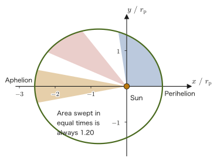
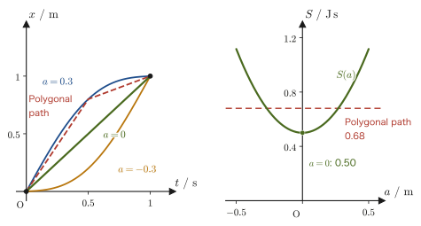
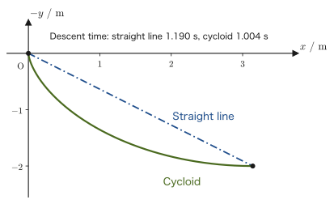

Chapter 44Applications of the Lagrangian Formalism and Variational Principles
In the previous chapter, starting from Newton's equation of motion $\bm F=m\bm a$, we derived the following form of Lagrange's equations of motion, written with generalized coordinates $q_i$:
$$ \diff{}{t}\left(\pdiff{L}{\dot q_i}\right)-\pdiff{L}{q_i}=0,\qquad L=T-U $$In the first half of this chapter, we first check “what is so convenient about this equation,” then apply it to four actual cases (falling motion, simple harmonic motion, the simple pendulum, and planetary motion), and master the procedure “just construct $L$ and differentiate mechanically, and the equation of motion follows.” For planetary motion, we confirm that the same result is obtained without using at all the formulas for the acceleration in polar coordinates, $a_r=\ddot r-r\dot\theta^2,\ a_\theta=2\dot r\dot\theta+r\ddot\theta$, derived in Section 6.2 (we compare the result with that of Newtonian mechanics in Chapter 8).
In the second half, we answer the question “where did Lagrange's equations of motion come from in the first place?” from a different angle than the previous chapter. When the starting point and the end point are fixed, nature “chooses” the path that makes a quantity called the action stationary—this is Hamilton's principle (the principle of least action), and from it, using the calculus of variations, exactly the same equations as in the previous chapter are derived. After that, we become familiar with the calculus of variations through three problems: the shortest path between two points, the path of light (Fermat's principle in Chapter 14), and the brachistochrone. Finally, we extend the method of constrained extrema learned in University Mathematics, Chapter 6 (the method of Lagrange multipliers) to mechanics and find the constraint forces (such as tension) themselves.
- Understand the advantages of Lagrange's equations of motion (they are independent of the coordinate system, and we need not consider constraint forces) and their limitation (nonconservative forces cannot be handled directly), and practice the procedure “just set up $L$ and differentiate” on four concrete examples (falling motion, simple harmonic motion, the simple pendulum, and planetary motion)
- Solve planetary motion in the Lagrangian formalism and confirm that it agrees completely with the results of Newtonian mechanics in Chapter 8 (conservation of angular momentum and Kepler's laws)
- Understand the concepts of a functional and the action, and Hamilton's principle (the principle of least action) $\delta S=0$, and derive the Euler–Lagrange equation by the calculus of variations (including the treatment of the boundary terms, without omitting a single line)
- Solve three variational problems (the shortest path between two points, the path of a light ray (Snell's law), and the brachistochrone problem) and understand their structural similarity to Fermat's principle
- Extend the method of Lagrange multipliers to mechanics, and learn how to find the constraint forces (such as tension) explicitly from the equations of motion with constraints
Source notes: Yasuhide Mochizuki, Physics Notes: Analytical Mechanics, pp. 7–9.
44.1 The Significance of Lagrange's Equations of Motion — What Do We Gain?
In Chapter 43, starting from Newton's equation of motion $\bm F=m\bm a$, we derived the following equation using generalized coordinates $q_i$ ($i=1,\dots,n$) (restated here).
$$ \diff{}{t}\left(\pdiff{L}{\dot q_i}\right)-\pdiff{L}{q_i}=0 \qquad (i=1,\dots,n),\qquad L\equiv T-U $$Here $\partial$ (the “round d”) is the symbol for partial differentiation, and $\partial L/\partial\dot q_i$ denotes “the result of differentiating $L$ with respect to $\dot q_i$ alone, regarding all variables other than $\dot q_i$ as constants” (University Mathematics, Section 6.2). The symbol $\equiv$ is an equals sign meaning “the left-hand side is defined by the right-hand side.” We call $L$ the Lagrangian (the name comes from that of Joseph-Louis Lagrange). Since $T$ is the kinetic energy and $U$ is the potential energy, and both are scalars, $L=T-U$ is also a scalar. Its dimension is that of energy, the same as that of kinetic energy and potential energy, that is, $\mathrm{N\cdot m=J}$. This is the starting point of this chapter; below we do not return to the derivation itself (it was completed in the previous chapter), but first confirm “why this single equation is so powerful,” and then practice actually using it.
Lagrange's equations of motion are a generalization of Newton's equation of motion $m\ddot x=F$. “Generalization” here means the following. As you learned in high school physics, $m\ddot x=F$ was an equation written for the rectangular (Cartesian) coordinate $x$. Often, however, we want to describe motion in terms of quantities that are not rectangular coordinates, such as the swing angle $\theta$ of a pendulum or the distance $r$ of a planet from the Sun. Lagrange's equations of motion are an extension of $m\ddot x=F$ so that it holds in the same form whatever we choose as the coordinates (whether lengths or angles). That the original equation is contained in it, that is, that Newton's equation of motion is recovered if we choose rectangular coordinates, can be verified immediately in the next example.
Example 44.1: Lagrange's equations of motion contain Newton's equation of motion
A particle (point mass) of mass $m$ moves along the $x$ axis, subject only to a conservative force $F=-\dd U/\dd x$ (Section 4.4) described by the potential energy $U(x)$. Apply Lagrange's equations of motion to $L=\frac12m\dot x^2-U(x)$ and verify that Newton's equation of motion $m\ddot x=F$ is obtained. Then write down the result when this is extended to three-dimensional rectangular coordinates $(x,y,z)$.
Solution. We differentiate $L=\frac12m\dot x^2-U(x)$ partially. The only term containing $\dot x$ is $\frac12m\dot x^2$, so $\partial L/\partial\dot x=m\dot x$. The only term containing $x$ is $-U(x)$, so $\partial L/\partial x=-\dd U/\dd x$ ($q$ and $\dot q$ are treated as independent variables; see Illustration 44.1 below). Substituting into Lagrange's equations of motion, we obtain
$$ \diff{}{t}\left(\pdiff{L}{\dot x}\right)-\pdiff{L}{x}=\diff{}{t}(m\dot x)-\left(-\diff{U}{x}\right)=m\ddot x+\diff{U}{x}=0 $$(since $m$ is constant, $\diff{}{t}(m\dot x)=m\ddot x$). Hence $m\ddot x=-\dd U/\dd x=F$, which is indeed Newton's equation of motion. For example, for a spring $U=\frac12kx^2$, so $m\ddot x=-kx$, and for gravity $U=mgx$, so $m\ddot x=-mg$.
In three dimensions, if we take $L=\frac12m(\dot x^2+\dot y^2+\dot z^2)-U(x,y,z)$, the same calculation can be carried out for each of $q=x,y,z$, giving $m\ddot x=-\partial U/\partial x$, $m\ddot y=-\partial U/\partial y$, and $m\ddot z=-\partial U/\partial z$. Written together, this is $m\bm a=-\nabla U=\bm F$, which is precisely Newton's equation of motion in vector form (Chapter 2). The unit of the right-hand side is $\mathrm{J/m}=\mathrm N$, and that of the left-hand side is also $\mathrm{kg\,m/s^2}=\mathrm N$, so they agree.
44.1.1 Advantages of Lagrange's equations of motion
The $q_i$ are called generalized coordinates, and they may be anything that specifies the position of a particle (or a system of particles) with neither too many nor too few variables: of course the rectangular coordinates $x,y,z$, but also polar coordinates $r,\theta$, cylindrical coordinates $r,\theta,z$, spherical coordinates $r,\theta,\varphi$, and so on (Chapter 43). Because of this flexibility in the choice of coordinates, Lagrange's equations of motion have the following advantages.
- Advantage (I). The Lagrangian $L$ is a scalar (a plain real number, not a quantity with both magnitude and direction), so it is relatively easy to obtain, easier than resolving the force $\bm F$, which is a vector, into components and adding them up.
- Advantage (II). Once $L$ has been found, the equation of motion follows simply by computing mechanically according to a fixed procedure (differentiate partially with respect to $\dot q_i$, differentiate with respect to time, and subtract the partial derivative with respect to $q_i$). There is no need to draw a force diagram (free-body diagram) every time and count up the forces.
- Advantage (III). Whatever coordinate system we use, as long as the position of the particle can be specified, Lagrange's equations of motion keep the same form $\diff{}{t}(\partial L/\partial\dot q_i)-\partial L/\partial q_i=0$. There is no need to rewrite the very “form” of the equation of motion each time we change the coordinate system—this is the greatest advantage.
- Advantage (IV). We need not take into account from the outset the troublesome constraint forces acting on a particle (the normal force on an inclined plane, the tension in the string of a simple pendulum, and so on). If we choose the generalized coordinates so that they satisfy the constraints (for the simple pendulum, for example, by building in the condition that the length of the rod is constant from the beginning and choosing only $\theta$ as the coordinate), the constraint forces do not appear in the equations of motion at all.
Intuition: Why is Advantage (III) so important?
Newton's equation of motion $\bm F=m\bm a$ is correct independently of the coordinate system as a vector equation, but when it is written out in components, its form changes from one coordinate system to another. For example, the acceleration in polar coordinates is $a_r=\ddot r-r\dot\theta^2,\ a_\theta=2\dot r\dot\theta+r\ddot\theta$ (Section 6.2), which has a completely different form from $a_x=\ddot x,\ a_y=\ddot y$ in rectangular coordinates. Each time we change the coordinate system, we must either memorize the acceleration formulas anew or derive them anew. Lagrange's equations of motion, however, always keep the same form “$\diff{}{t}(\partial L/\partial\dot q_i)-\partial L/\partial q_i=0$” whatever the $q_i$ are. All that changes with the coordinate system is the content of $L$ that is substituted into this form (how $T,U$ are written in terms of $q_i,\dot q_i$); the way of constructing the equation itself does not change. We will see this power in action for planetary motion in Section 44.3.
Caution: Disadvantage (I) — Nonconservative forces cannot be handled as they stand
Lagrange's equations of motion $\diff{}{t}(\partial L/\partial\dot q_i)-\partial L/\partial q_i=0$ presuppose that the Lagrangian can be written in the form $L=T-U$, that is, that all forces are conservative forces (forces that can be derived from a potential energy $U$ in the form $\bm F=-\nabla U$, Section 4.4). A nonconservative force such as the frictional force acting at the contact surface of two bodies cannot be derived from a potential energy in the first place, so it cannot be expressed by Lagrange's equations of motion in this form (it can be handled by using the extended form containing nonconservative forces learned in Chapter 43, $\diff{}{t}(\partial L/\partial\dot q_i)-\partial L/\partial q_i=Q_i'$, but $Q_i'$ (the generalized force of the nonconservative forces, Section 43.5) must be found separately). In Example 44.2 of Section 44.2, we actually use this extended form.
44.1.2 A note on dimensions
As a continuation of the caution in Section 43.3 (the units of the generalized force and the generalized momentum are not always $\mathrm N$ and $\mathrm{kg\,m/s}$), here we sort out the dimensions of the partial derivatives of the Lagrangian.
The dimension of the Lagrangian $L$ itself is always that of energy ($\mathrm J$), but the dimensions of $\partial L/\partial\dot q_i$ and $\partial L/\partial q_i$ change depending on what $q_i$ represents. For example, if $q_i$ is a length ($\mathrm m$), then $\partial L/\partial\dot q_i$ has the dimension of momentum ($\mathrm{kg\,m/s}$) and $\partial L/\partial q_i$ has the dimension of force ($\mathrm N$). If $q_i$ is an angle (dimensionless), however, then $\partial L/\partial\dot q_i$ has the dimension of angular momentum ($\mathrm{kg\,m^2/s}$) and $\partial L/\partial q_i$ has the dimension of torque, or moment of force ($\mathrm{N\cdot m}$)—note that “the dimensions of $\partial L/\partial\dot q_i$ and $\partial L/\partial q_i$ are not always $\mathrm N$.” In general, $p_i\equiv\partial L/\partial\dot q_i$ is called the generalized momentum (Section 43.2). On the other hand, the generalized force $Q_i$ (Section 43.3) is $Q_i=-\partial U/\partial q_i$ for conservative forces, and the relation $\partial L/\partial q_i=\partial T/\partial q_i-\partial U/\partial q_i=Q_i+\partial T/\partial q_i$ holds ($\partial T/\partial q_i$ is the term corresponding to the centrifugal force in polar coordinates, and it appears as $mr\dot\theta^2$ in the planetary motion of Section 44.3). Both $Q_i$ and $\partial L/\partial q_i$ have the dimension of force ($\mathrm N$) if $q_i$ is a length and the dimension of torque ($\mathrm{N\cdot m}$) if it is an angle. The dimensions are summarized in Table 44.1.
| Type of $q_i$ | Dimension of $q_i$ | Dimension of $p_i=\partial L/\partial\dot q_i$ | Dimension of $\partial L/\partial q_i$ (and of the generalized force $Q_i$) |
|---|---|---|---|
| Length (e.g., $x,r$) | $\mathrm m$ | Momentum $\mathrm{kg\,m/s}$ | Force $\mathrm N$ |
| Angle (e.g., $\theta,\varphi$) | Dimensionless | Angular momentum $\mathrm{kg\,m^2/s}$ | Torque $\mathrm{N\cdot m}$ |
Intuition: $q_i$ and $\dot q_i$ are independent variables
What is most likely to cause confusion when partially differentiating the Lagrangian $L(q_i,\dot q_i,t)$ is the rule “treat $q_i$ and $\dot q_i$ as separate, independent variables.” Physically, $\dot q_i$ is the time derivative of $q_i$, but when computing the partial derivative $\partial L/\partial q_i$ we treat $\dot q_i$ like a constant (unrelated to $q_i$) and differentiate with respect to $q_i$ alone, and conversely, when computing $\partial L/\partial\dot q_i$ we treat $q_i$ like a constant and differentiate with respect to $\dot q_i$ alone. In the end, the relation between $q_i(t)$ and $\dot q_i(t)=\dd q_i/\dd t$ is used within the equation of motion only in the part $\diff{}{t}(\partial L/\partial\dot q_i)$ (the stage where the time derivative is taken).
Illustration 44.1: Taking partial derivatives with $q$ and $\dot q$ as independent variables
Find $\partial L/\partial\dot q$ and $\partial L/\partial q$ for $L=\dfrac12 m\dot q^2-mgq$.
Solution. When computing $\partial L/\partial\dot q$, we treat $q$ as a constant and differentiate with respect to $\dot q$ alone. The only term in $L$ that contains $\dot q$ is $\frac12m\dot q^2$, so
$$ \pdiff{L}{\dot q}=m\dot q $$On the other hand, when computing $\partial L/\partial q$, we treat $\dot q$ as a constant and differentiate with respect to $q$ alone. The only term in $L$ that contains $q$ is $-mgq$, so
$$ \pdiff{L}{q}=-mg $$Note that $\partial L/\partial\dot q=m\dot q$ (the dimension of momentum) and $\partial L/\partial q=-mg$ (the dimension of force) are completely different expressions—since the term containing $\dot q$ and the term containing $q$ are different terms, their partial derivatives can be computed independently of each other.
44.2 Applications: Falling Motion, Simple Harmonic Motion, and the Simple Pendulum
From here on we practice actually using Lagrange's equations of motion. The procedure is always the same three steps.
- Choose a generalized coordinate $q$ that specifies the position of the particle completely and without redundancy.
- Write the kinetic energy $T$ and the potential energy $U$ in terms of the chosen coordinate and its time derivative ($\dot q$), and form $L=T-U$.
- Substitute mechanically into $\diff{}{t}(\partial L/\partial\dot q)-\partial L/\partial q=0$ and simplify.
Let us apply these three steps in turn to three motions familiar from high school physics—falling motion, simple harmonic motion, and the simple pendulum.
44.2.1 Falling motion
Take the $x$ axis vertically upward and consider a particle of mass $m$ in free fall (Figure 44.1). The potential energy due to gravity near the Earth's surface is, as in the formula of high school physics (Section 4.4),
\begin{equation} U=mgx \label{eq:44-fall-U} \end{equation}(If we think of $x$ as the height, this is exactly $U=mgh$. Note that in the “super-macroscopic” case where the height above the Earth's surface is so large that it cannot be neglected compared with the radius $R_\oplus$ of the Earth, this approximation cannot be used, and one must use the exact form $U=-GMm/r$ learned in Section 8.4 ($r$ is the distance from the center of the Earth). Indeed, setting $r=R_\oplus+x$ and expanding for $x\ll R_\oplus$ gives $U=-GMm/(R_\oplus+x)\approx-GMm/R_\oplus+GMm x/R_\oplus^2=(\text{constant})+mgx$ (where we used $g\equiv GM/R_\oplus^2$), which agrees with Eq. \eqref{eq:44-fall-U} apart from the constant—here, too, we can confirm that $U=mgh$ of high school physics was an approximation of the gravitational potential energy near the Earth's surface.) The kinetic energy is $T=\frac12m\dot x^2$, so
\begin{equation} L=T-U=\frac12m\dot x^2-mgx \label{eq:44-fall-L} \end{equation}Substituting into Lagrange's equations of motion gives
$$ \diff{}{t}\left(\pdiff{L}{\dot x}\right)-\pdiff{L}{x}=\diff{}{t}(m\dot x)-(-mg)=\diff{}{t}(m\dot x)+mg=0 $$(Note that $\partial L/\partial\dot x=m\dot x$ comes only from the term $\frac12m\dot x^2$, and $\partial L/\partial x=-mg$ comes only from the term $-mgx$.) Therefore,
\begin{equation} \diff{}{t}(m\dot x)=-mg \label{eq:44-fall-eom} \end{equation}If $m$ is constant, then $m\ddot x=-mg$, that is, $\ddot x=-g$, which is exactly the equation of motion for free fall in high school physics (Chapter 2).
Illustration 44.2: Falling motion (Lagrangian formalism)
Solve the free-fall motion with the $x$ axis taken vertically upward using Lagrange's equations of motion.
Solution. It goes exactly as in the main text, Eqs. \eqref{eq:44-fall-U}–\eqref{eq:44-fall-eom}, and the result is $\diff{}{t}(m\dot x)=-mg$, that is, $\ddot x=-g$ (motion with constant acceleration).
Example 44.2: Falling motion with air resistance — the case including a nonconservative force
A particle of mass $m$ falls freely, with the coordinate $x$ taken vertically upward. When air resistance proportional to the velocity (proportionality constant $k>0$, always opposite in direction to the velocity) acts, find the terminal velocity (the constant velocity after a sufficiently long time has elapsed).
Solution. Air resistance is a nonconservative force, so it cannot be included in the potential energy $U$. We use Lagrange's equations of motion in the form that includes nonconservative forces, learned in Chapter 43,
$$ \diff{}{t}\left(\pdiff{L}{\dot x}\right)-\pdiff{L}{x}=Q' $$We keep $L$ as Eq. \eqref{eq:44-fall-L} ($L=\frac12m\dot x^2-mgx$), which includes only gravity, and put the air resistance on the right-hand side as the generalized force $Q'$ (by the definition $Q'=\sum_j F_j'\,\partial x_j/\partial q$ in Chapter 43; when the rectangular coordinate $x$ is used as it is, $Q'=F'_x$). Since the resistive force is proportional to the velocity $\dot x$ and opposite in direction, $Q'=-k\dot x$ (a resistive force of the same form was treated in Section 7.3. Since $k\dot x$ is a force, the unit of $k$ is $\mathrm{N/(m/s)}=\mathrm{kg/s}$). Therefore,
$$ \diff{}{t}(m\dot x)+mg=-k\dot x \qquad\text{that is}\qquad m\ddot x+k\dot x+mg=0 $$At the terminal velocity $v_{\text{terminal}}$, the acceleration is 0 ($\ddot x=0$), so substituting this gives
$$ k\dot x+mg=0 \qquad\therefore\ v_{\text{terminal}}=\dot x=-\frac{mg}{k} $$(Dimension check: the unit of $mg/k$ is $\mathrm{kg\,(m/s^2)/(kg/s)}=\mathrm{m/s}$, which agrees with the unit of velocity.) The negative sign indicates that, since we took $x$ to be positive upward, the terminal velocity is directed downward (with magnitude $mg/k$)—the larger the air resistance (the larger $k$) or the lighter the particle (the smaller $m$), the smaller the terminal velocity becomes (this is why raindrops and parachutes keep falling at a constant speed).
44.2.2 Simple harmonic motion
Consider a particle of mass $m$ attached to the end of a spring (spring constant $k$) fixed to a wall. Let $x_0$ be the position of the particle when the spring is at its natural length, and take the $x$ axis rightward (Figure 44.2). By Hooke's law (Section 4.4), the potential energy due to the spring is
$$ U=\frac12k(x-x_0)^2 $$and the kinetic energy is $T=\frac12m\dot x^2$. Therefore,
$$ L=\frac12m\dot x^2-\frac12k(x-x_0)^2 $$Substituting into Lagrange's equations of motion gives
$$ \diff{}{t}\left(\pdiff{L}{\dot x}\right)-\pdiff{L}{x}=\diff{}{t}(m\dot x)-\big(-k(x-x_0)\big)=\diff{}{t}(m\dot x)+k(x-x_0)=0 $$from which we obtain
\begin{equation} \diff{}{t}(m\dot x)=-k(x-x_0) \label{eq:44-sho-eom} \end{equation}If we choose $x_0$ as the origin instead ($x'\equiv x-x_0$), this becomes $m\ddot x'=-kx'$, which is exactly the equation of motion of the spring pendulum learned in Section 7.1.
Illustration 44.3: Simple harmonic motion (Lagrangian formalism)
Solve the spring pendulum of Figure 44.2 using Lagrange's equations of motion.
Solution. It goes exactly as in the main text, and the result is $\diff{}{t}(m\dot x)=-k(x-x_0)$ (Eq. \eqref{eq:44-sho-eom}), that is, if $x_0$ is taken as the origin, the equation of motion of simple harmonic motion, $m\ddot x=-kx$ (Theorem 7.1).
Example 44.3: Period and maximum speed of a spring pendulum
A particle of mass $m=0.20\ \mathrm{kg}$ is attached to a spring of spring constant $k=80\ \mathrm{N/m}$ (Figure 44.2). At time $t=0$, it is pulled to the right by $A=0.050\ \mathrm m$ from the natural-length position and released gently. (1) Find the angular frequency $\omega$ and the period. (2) Find the position $x(t)$. (3) Find the maximum speed of the particle.
Solution. (1) Using the displacement from the natural-length position, $X\equiv x-x_0$, Eq. \eqref{eq:44-sho-eom} becomes $m\ddot X=-kX$, that is, $\ddot X=-\omega^2X$ ($\omega\equiv\sqrt{k/m}$) (since $x_0$ is a constant, $\ddot X=\ddot x$). Thus
$$ \omega=\sqrt{\frac{k}{m}}=\sqrt{\frac{80\ \mathrm{N/m}}{0.20\ \mathrm{kg}}}=\sqrt{400\ \mathrm{s^{-2}}}=20\ \mathrm{rad/s} $$Here $\mathrm{N/(m\,kg)}=\mathrm{s^{-2}}$, so taking the square root gives $\mathrm{s^{-1}}$. The period is $T_0=2\pi/\omega=2\pi/(20\ \mathrm{s^{-1}})=0.314\ \mathrm s$ (about $0.31\ \mathrm s$) (the same as $T_0=2\pi\sqrt{m/k}$ of high school physics).
(2) The general solution is $X=C_1\cos\omega t+C_2\sin\omega t$ (Theorem 7.1). From the initial condition $X(0)=A$, we get $C_1=A$. Putting the initial condition $\dot X(0)=0$ into the velocity $\dot X=-C_1\omega\sin\omega t+C_2\omega\cos\omega t$ gives $C_2\omega=0$, so $C_2=0$. Therefore
$$ x(t)=x_0+A\cos\omega t=x_0+0.050\cos(20t)\ \mathrm m\qquad(t\text{ in seconds}) $$is the position.
(3) The velocity is $\dot x=-A\omega\sin\omega t$, and since $\abs{\sin\omega t}\le1$, the maximum speed is $A\omega=0.050\ \mathrm m\times20\ \mathrm{s^{-1}}=1.0\ \mathrm{m/s}$ (attained when the particle passes the natural-length position). Checking with energy, the initial elastic energy is $\frac12kA^2=\frac12\times80\times0.050^2=0.10\ \mathrm J$, and the kinetic energy at the maximum speed is $\frac12m(A\omega)^2=\frac12\times0.20\times1.0^2=0.10\ \mathrm J$; the two indeed agree.
44.2.3 Simple pendulum
Consider a particle of mass $m$ hung from a fixed point $\mathrm O$ on the ceiling by a light rod (or string) of length $\ell$ (Figure 44.3). In the $r,\theta$ polar coordinate system ($\mathrm O$ as the origin, vertically downward as $\theta=0$), the constraint that the length of the rod is constant, $r=\ell$, shows that only the coordinate $\theta$ varies—this is a concrete example of advantage (IV) in Section 44.1, namely choosing the generalized coordinates so that the constraint is satisfied from the start. Taking the lowest point as the reference, the potential energy in the vertical direction is
$$ U=mg\ell(1-\cos\theta) $$(this is the height difference $\ell(1-\cos\theta)$ in Figure 44.3 multiplied by the gravitational acceleration and the mass). Using $r=\ell$ (constant, $\dot r=0$) in the velocity in polar coordinates, $\bm v=\dot r\bm e_r+r\dot\theta\bm e_\theta$ (Section 6.1), the kinetic energy is
$$ T=\frac12m\left(\dot r^2+(r\dot\theta)^2\right)=\frac12m\ell^2\dot\theta^2 $$Therefore,
$$ L=\frac12m\ell^2\dot\theta^2-mg\ell(1-\cos\theta) $$Substituting into Lagrange's equations of motion (the coordinate being $\theta$) gives
$$ \diff{}{t}\left(\pdiff{L}{\dot\theta}\right)-\pdiff{L}{\theta}=\diff{}{t}(m\ell^2\dot\theta)-\big(-mg\ell\sin\theta\big)=\diff{}{t}(m\ell^2\dot\theta)+mg\ell\sin\theta=0 $$(Here $\partial L/\partial\theta$ comes from $-mg\ell\sin\theta$, obtained by differentiating the term $-mg\ell(1-\cos\theta)$ with respect to $\theta$.) Hence,
\begin{equation} \diff{}{t}(m\ell^2\dot\theta)=-mg\ell\sin\theta \label{eq:44-pend-eom} \end{equation}Since $m,\ell$ are constants, $m\ell^2\ddot\theta=-mg\ell\sin\theta$; dividing both sides by $m\ell^2$ gives
\begin{equation} \ddot\theta=-\frac{g}{\ell}\sin\theta \label{eq:44-pend-eom-final} \end{equation}This is the (exact) equation of motion of the simple pendulum. If we use the small-angle approximation $\sin\theta\approx\theta$ (an approximation that holds when $\theta$ is measured in radians; it is the first-order approximation of the Taylor expansion in University Mathematics, Chapter 4), we obtain $\ddot\theta\approx-(g/\ell)\theta$, and the formula for the period of a simple pendulum, $T_0=2\pi\sqrt{\ell/g}$, learned in Section 7.2, is obtained here as well.
Caution: Make a habit of checking dimensions
Whenever you set up an expression for a potential energy, make a habit of checking its dimension. For example, in $U=mg\ell(1-\cos\theta)$, $\ell(1-\cos\theta)$ is a length ($\mathrm m$) and $mg$ is a force ($\mathrm N$), so the product is $\mathrm{N\,m}=\mathrm J$, which matches the dimension of energy. If you forgot to write $mg$ and wrote $U=\ell(1-\cos\theta)$, the dimension of $U$ would be $\mathrm m$, and the two terms of $L=T-U$ (with units $\mathrm J$ and $\mathrm m$) would not match in dimension, so you could notice the error on the spot. A dimensional mismatch is the easiest way to find a forgotten factor.
Illustration 44.4: Simple pendulum (Lagrangian formalism)
Solve the simple pendulum of Figure 44.3 using Lagrange's equations of motion with the polar coordinate $\theta$, which satisfies the constraint $r=\ell$ from the start.
Solution. It goes exactly as in the main text, and the result is $\ddot\theta=-(g/\ell)\sin\theta$ (Eq. \eqref{eq:44-pend-eom-final}). Note that the tension in the string of the pendulum does not appear in the equation of motion at all—because we used only the coordinate $\theta$, which satisfies the constraint $r=\ell$, there was no need to consider the constraint force (tension) from the start, as in advantage (IV) of Section 44.1. If you want to know the magnitude of the tension itself, use the method of Lagrange multipliers in Section 44.7.
Example 44.4: Energy conservation for the simple pendulum and the speed at the lowest point
A simple pendulum of length $\ell=1.0\ \mathrm m$ and mass $m=0.50\ \mathrm{kg}$ is released from rest at a position tilted by $\theta_0=60^\circ$ from the vertically downward direction. (1) From the equation of motion \eqref{eq:44-pend-eom}, show that $\frac12m\ell^2\dot\theta^2+mg\ell(1-\cos\theta)$ is constant in time. (2) Find the speed of the particle at the lowest point ($\theta=0$).
Solution. (1) Eq. \eqref{eq:44-pend-eom} reads $m\ell^2\ddot\theta=-mg\ell\sin\theta$, that is, $m\ell^2\ddot\theta+mg\ell\sin\theta=0$. Multiplying both sides by $\dot\theta$ gives
$$ m\ell^2\dot\theta\,\ddot\theta+mg\ell\sin\theta\;\dot\theta=0 $$Each term on the left-hand side can be written, by the rule for differentiating a composite function (University Mathematics, Section 6.4), as $\diff{}{t}\left(\frac12m\ell^2\dot\theta^2\right)=m\ell^2\dot\theta\ddot\theta$ and $\diff{}{t}\big(-mg\ell\cos\theta\big)=mg\ell\sin\theta\,\dot\theta$. Adding the constant $mg\ell$ does not change the time derivative, so
$$ \diff{}{t}\left[\frac12m\ell^2\dot\theta^2+mg\ell(1-\cos\theta)\right]=0 $$That is, $E=T+U=\frac12m\ell^2\dot\theta^2+mg\ell(1-\cos\theta)$ is constant (conservation of mechanical energy, Section 4.5).
(2) At the instant of release, $\dot\theta=0$ and $\theta=\theta_0$, so $E=mg\ell(1-\cos\theta_0)$. At the lowest point $\theta=0$ we have $U=0$, so
$$ \frac12m\ell^2\dot\theta^2=mg\ell(1-\cos\theta_0) \qquad\therefore\ v=\ell\abs{\dot\theta}=\sqrt{2g\ell(1-\cos\theta_0)} $$Substituting the numerical values, with $\cos60^\circ=0.5$, we obtain
$$ v=\sqrt{2\times9.8\ \mathrm{m/s^2}\times1.0\ \mathrm m\times(1-0.5)}=\sqrt{9.8}\ \mathrm{m/s}=3.1\ \mathrm{m/s} $$The mass $m$ cancels and drops out, so the result does not depend on the mass (it is the same result as $\frac12mv^2=mgh$ in high school physics, with $h=\ell(1-\cos\theta_0)=0.50\ \mathrm m$). The kinetic energy is $\frac12\times0.50\times9.8=2.45\ \mathrm J$.
44.3 Application: Planetary Motion — Comparison with the Results of Chapter 8
As a final application, we consider the motion of a planet (mass $m$) moving around the Sun (mass $M$). We use $r,\theta$ polar coordinates with the Sun at the origin (Figure 44.4). The potential energy due to the Sun's gravity is the gravitational potential energy (Section 4.4)
$$ U=-G\frac{Mm}{r} $$and the kinetic energy, as in the falling motion and the simple pendulum, follows from the velocity in polar coordinates:
$$ T=\frac12m\left(\dot r^2+(r\dot\theta)^2\right) $$(This time, unlike the simple pendulum, $r$ also varies with time—the planet approaches and recedes from the Sun, so the constraint $r=$ constant does not hold.) Therefore,
$$ L=\frac12m\left(\dot r^2+(r\dot\theta)^2\right)-\left(-G\frac{Mm}{r}\right)=\frac12m\left(\dot r^2+(r\dot\theta)^2\right)+G\frac{Mm}{r} $$This problem has two coordinates ($r$ and $\theta$), so Lagrange's equations of motion also form a system of two simultaneous equations, one for each coordinate.
Derivation: Lagrange's equations for planetary motion (the $r$ and $\theta$ directions)
First, let us write down the two equations in their abstract form:
\begin{equation} \begin{cases} \diff{}{t}\left(\pdiff{L}{\dot r}\right)-\pdiff{L}{r}=0\\[2mm] \diff{}{t}\left(\pdiff{L}{\dot\theta}\right)-\pdiff{L}{\theta}=0 \end{cases} \label{eq:44-planet-abstract} \end{equation}Here we differentiate $L$ partially with respect to $r,\dot r,\theta,\dot\theta$ in turn. The only term containing $\dot r$ is $\frac12m\dot r^2$, so $\partial L/\partial\dot r=m\dot r$. The terms containing $r$ are the two terms $\frac12mr^2\dot\theta^2$ and $GMm/r$, so $\partial L/\partial r=mr\dot\theta^2-GMm/r^2$ (note that differentiating $GMm/r=GMmr^{-1}$ with respect to $r$ gives $-GMmr^{-2}$). Next, the only term containing $\dot\theta$ is $\frac12mr^2\dot\theta^2$, so $\partial L/\partial\dot\theta=mr^2\dot\theta$. No term in $L$ contains $\theta$ itself ($L$ does not depend on $\theta$ itself; the angle enters only through $\dot\theta$), so $\partial L/\partial\theta=0$. Substituting these into Eq. \eqref{eq:44-planet-abstract}, we obtain
\begin{equation} \begin{cases} \diff{}{t}(m\dot r)-\left(mr\dot\theta^2-G\dfrac{Mm}{r^2}\right)=0\\[2mm] \diff{}{t}(mr^2\dot\theta)-0=0 \end{cases} \label{eq:44-planet-concrete} \end{equation}(This is the form obtained by substituting $L$ explicitly into the abstract form \eqref{eq:44-planet-abstract}.) Let us simplify this further. In the first equation, $m$ is constant, so $\diff{}{t}(m\dot r)=m\ddot r$, and distributing the minus sign in front of the parentheses gives
$$ m\ddot r-mr\dot\theta^2+G\frac{Mm}{r^2}=0 $$In the second equation, both $r^2$ and $\dot\theta$ vary with time, so by the product rule (using $\diff{}{t}(r^2)=2r\dot r$) we have $\diff{}{t}(mr^2\dot\theta)=m(2r\dot r\dot\theta+r^2\ddot\theta)$, and hence
$$ m\big(2r\dot r\dot\theta+r^2\ddot\theta\big)=0 $$The left-hand side is entirely a multiple of $r$, so dividing both sides by $r$ ($r\ne0$) gives $m(2\dot r\dot\theta+r\ddot\theta)=0$. As for the first equation, moving $-mr\dot\theta^2$ and the gravitational term to the other side gives $m(\ddot r-r\dot\theta^2)=-GMm/r^2$. In summary,
\begin{equation} \begin{cases} m\big(\ddot r-r\dot\theta^2\big)=-G\dfrac{Mm}{r^2}\\[2mm] m\big(2\dot r\dot\theta+r\ddot\theta\big)=0 \end{cases} \label{eq:44-planet-final} \end{equation}The expressions $\ddot r-r\dot\theta^2$ and $2\dot r\dot\theta+r\ddot\theta$ on the left-hand sides are in fact nothing other than the radial component $a_r$ and the angular component $a_\theta$ of the acceleration in polar coordinates (Section 6.2).
∎
Intuition: You can derive the polar-coordinate acceleration without memorizing it
In Section 6.2, we derived the polar-coordinate acceleration formulas $a_r=\ddot r-r\dot\theta^2,\ a_\theta=2\dot r\dot\theta+r\ddot\theta$ by differentiating the velocity $\bm v=\dot r\bm e_r+r\dot\theta\bm e_\theta$ once more with respect to time, taking care that the unit vectors $\bm e_r,\bm e_\theta$ themselves change with time. In the derivation of Eq. \eqref{eq:44-planet-final}, however, we never used this acceleration formula—as long as we know $v_r=\dot r,\ v_\theta=r\dot\theta$ (the polar components of the velocity), we only need to differentiate $T=\frac12m(\dot r^2+(r\dot\theta)^2)$ partially in a mechanical way, and the correct equations of motion come out without our having memorized the acceleration formula. This is the power of advantage (I) in Section 44.1 ($L$ is a scalar quantity and easy to find) and advantage (II) (the calculation is mechanical).
44.3.1 Comparison with the results of Chapter 8
The first equation of Eq. \eqref{eq:44-planet-final}, $m(\ddot r-r\dot\theta^2)=-GMm/r^2$, agrees exactly with the result derived directly from Newton's equation of motion (in the radial direction) in Chapter 8. The second equation, $m(2\dot r\dot\theta+r\ddot\theta)=0$, has the same meaning as $\diff{}{t}(mr^2\dot\theta)=0$ (the second equation of Eq. \eqref{eq:44-planet-concrete} itself), and
$$ p_\theta\equiv mr^2\dot\theta=\text{constant} $$expresses the conservation of angular momentum (Law 8.1). Here $p_\theta=\partial L/\partial\dot\theta$ is the generalized momentum corresponding to $\theta$. In this chapter $L$ denotes the Lagrangian, so we do not write the angular momentum as $L_z$; as in Chapter 45 and later, we write it as $p_\theta$ (it is exactly the same quantity $mr^2\dot\theta$ that was introduced as the angular momentum in Chapter 8).
Let us also check how this connects with Kepler's second law (Law 8.2). During a small time interval $\dd t$, the radius vector of length $r$ rotates through an angle $\dd\theta=\dot\theta\,\dd t$. The region it sweeps out can be regarded as a thin triangle with base $r$ and height $r\,\dd\theta$, so its area is
$$ \dd A=\frac12\cdot r\cdot(r\,\dd\theta)=\frac12r^2\dot\theta\,\dd t $$Therefore the areal velocity (the area swept out by the radius vector per unit time) is
\begin{equation} \diff{A}{t}=\frac12r^2\dot\theta=\frac{p_\theta}{2m}=\text{constant} \label{eq:44-areal-velocity} \end{equation}(because $p_\theta=mr^2\dot\theta$ is constant and $m$ is also constant). In other words, “Lagrange's equation of motion in the $\theta$ direction” $=$ “conservation of angular momentum” $=$ “Kepler's second law.” The fact that $\theta$ itself does not appear in $L$ ($L$ does not change when the coordinate $\theta$ is changed) is the source of this conservation law—this idea is generalized in Chapter 46 as Noether's theorem, which connects symmetries and conservation laws.
We have confirmed that both the Lagrangian formalism and Newtonian mechanics (Chapter 8) arrive at exactly the same equations of motion and the same conservation law. It is only natural that we reach the same physical laws even when the starting points differ (considering the balance of forces, or mechanically differentiating the scalar energy quantity $L$), but it is worth checking by actually working it out.
Finally, let us solve the simultaneous equations \eqref{eq:44-planet-final} numerically on a computer. We take the perihelion distance $r_{\mathrm p}$ as the unit of length and $\sqrt{r_{\mathrm p}^3/(GM)}$ as the unit of time (a nondimensionalization with $GM=1$ and $r_{\mathrm p}=1$), and take as initial conditions “at perihelion: $r=1,\ \dot r=0,\ \theta=0,\ \dot\theta=1.2$” (the speed is then $r\dot\theta=1.2$, which is greater than the speed $\sqrt{GM/r}=1$ of a circular orbit, so the orbit is an ellipse, not a circle). The result is shown in Figure 44.5. The orbit is an ellipse with the Sun at a focus (eccentricity $e=0.44$, semi-major axis $a=1.786$, period $2\pi a^{3/2}\approx15.0$), and the planet moves fast near perihelion and slowly near aphelion. Each of the three sectors in the figure is the area swept out by the radius vector during the same time interval $\Delta t=2.0$, and in every case its value equals the quantity $\dfrac{p_\theta}{2m}\Delta t=\dfrac{r^2\dot\theta}{2}\Delta t=\dfrac{1.2}{2}\times2.0=1.2$ obtained from Eq. \eqref{eq:44-areal-velocity}.

Illustration 44.5: Planetary motion (Lagrangian formalism)
Find the equations of motion of a planet moving around the Sun using Lagrange's equations of motion in polar coordinates.
Solution. As in the main text (Eqs. \eqref{eq:44-planet-abstract}–\eqref{eq:44-planet-final}), the result is $m(\ddot r-r\dot\theta^2)=-GMm/r^2$ and $m(2\dot r\dot\theta+r\ddot\theta)=0$, which agree exactly with the result obtained by Newtonian mechanics in Chapter 8.
Example 44.5: Circular orbits and Kepler's third law
A planet moves around the Sun on a circular orbit of radius $R$ ($r=R$ constant). Find the orbital angular velocity $\Omega\equiv\dot\theta$ and the orbital period $P$. Also confirm that $P^2$ is proportional to $R^3$ (Kepler's third law).
Solution. On a circular orbit $r=R$ is constant, so $\dot r=0,\ \ddot r=0$. Substituting these into the first equation of Eq. \eqref{eq:44-planet-final}, $m(\ddot r-r\dot\theta^2)=-GMm/r^2$, gives
$$ m(0-R\Omega^2)=-\frac{GMm}{R^2} \qquad\therefore\ \Omega^2=\frac{GM}{R^3} $$(Note that the mass $m$ cancels from both sides and disappears—regardless of the planet's mass, circular orbits of the same radius have the same angular velocity.) From the definition of angular velocity, the period is $P=2\pi/\Omega$, so
$$ P^2=\frac{4\pi^2}{\Omega^2}=\frac{4\pi^2}{GM}R^3 $$The constant of proportionality $4\pi^2/(GM)$ does not depend on the planet (it is determined by the Sun's mass $M$ alone), so $P^2\propto R^3$; that is, Kepler's third law is confirmed (in Section 8.3 we study it in detail, including the case of an elliptical orbit, where $R$ is replaced by the semi-major axis $a$).
| Motion | Coordinates | Lagrangian $L$ | Conserved quantity (property of $L$) |
|---|---|---|---|
| Falling motion | Rectangular coordinate $x$ (vertically upward) | $\frac12m\dot x^2-mgx$ | Mechanical energy ($L$ does not contain $t$) |
| Simple harmonic motion | Rectangular coordinate $x$ | $\frac12m\dot x^2-\frac12k(x-x_0)^2$ | Mechanical energy |
| Simple pendulum | Polar coordinate $\theta$ ($r=\ell$ fixed) | $\frac12m\ell^2\dot\theta^2-mg\ell(1-\cos\theta)$ | Mechanical energy |
| Planetary motion | Polar coordinates $r,\theta$ | $\frac12m(\dot r^2+(r\dot\theta)^2)+GMm/r$ | Mechanical energy, and the angular momentum $p_\theta=mr^2\dot\theta$ arising from $L$ not containing $\theta$ |
Table 44.2 shows at a glance that four examples that are completely different in coordinate system and type of motion could all be solved by the same procedure alone—“form $L$ and differentiate it mechanically.” This is a concrete instance of advantage (III) (independence of the coordinate system) described in Section 44.1.
44.4 Functionals and the Action — Hamilton's Principle (the Principle of Least Action)
All the applications so far have used the result of Chapter 43: “construct $L$ and differentiate it mechanically, and the equation of motion follows.” From here on we change our point of view and re-examine where Lagrange's equations of motion come from in the first place, starting from a way of thinking entirely different from Newton's equation of motion—the variational principle. To do this, we first introduce a new kind of quantity, the functional, which assigns a single real number to a function.
44.4.1 What is a functional?
The “functions” we have dealt with so far take a single number $x$ as input and return a single number $f(x)$ (for example, $f(x)=x^2$). In contrast, a functional (which we deal with from now on) takes a function itself (that is, one curve, one path) as input and returns a single number; it is a “function of a function,” one level higher in abstraction.
Intuition: Each choice of route determines one number
Suppose, for example, that there are many ways to get from home to the station. Each time we decide which route to take (that is, which path to choose), its length and the time it takes are each fixed to a single value. This correspondence—“choosing one path fixes one number (the length or the time)”—is exactly the idea of a functional. The input is not a number but the path (function) itself, and the output is, as always, a single number. In physics too, each time we fix which path $q(t)$ a particle follows in moving from time $t_1$ to time $t_2$, a single number (the “action,” defined later) is determined for that path. What we want to investigate from here on is the question, “Out of the infinitely many possible paths, which one does nature actually choose?”
Let us check this with numbers. For $J[y]=\int_0^1y(x)\,\dd x$ (the area between the curve and the $x$ axis), inserting the function $y(x)=x$ gives $J=\frac12$, and inserting $y(x)=x^2$ gives $J=\frac13$. Each time we change the function we insert, the number that comes out changes. Similarly, the length of a curve, $J[y]=\int_0^1\sqrt{1+y'^2}\,\dd x$ ($y'=\dd y/\dd x$ is the slope of the curve, and $\sqrt{1+y'^2}\,\dd x$ is the length of the hypotenuse when we advance $\dd x$ horizontally and $y'\dd x$ vertically; for details see Section 44.6.1), is $\sqrt2\approx1.414$ for $y=x$. These are examples of the functionals in the following definition.
Definition 44.1: Functional
A rule that assigns a single real number $J[y]$ to each element $y(x)$ of some set of functions (for example, the set of all smooth functions with prescribed endpoint values) is called a functional of $y$, and is written with square brackets, as $J[y]$ (the notation with square brackets emphasizes that $J[y]$ takes a function $y$ and returns a number, whereas the round-bracket $f(x)$ takes a number $x$ and returns a number). The most basic functionals are those that can be written, using some function $F(y,y',x)$ ($y'=\dd y/\dd x$), in the form
$$ J[y]=\int_{x_1}^{x_2}F\big(y(x),y'(x),x\big)\,\dd x $$(a definite integral, as in University Mathematics, Chapter 5, that depends on the function $y(x)$ in its integrand).
44.4.2 The action and Hamilton's principle
The most important functional in mechanics is the action. Let $q(t)$ be the generalized coordinate of a particle (or a system of particles) with one degree of freedom (for several degrees of freedom, $q_1(t),\dots,q_n(t)$), and use the Lagrangian $L(q,\dot q,t)=T-U$; the action is then defined as follows.
Definition 44.2: Action
For a path $q(t)$ from time $t_1$ to time $t_2$,
\begin{equation} S[q]\equiv\int_{t_1}^{t_2}L\big(q(t),\dot q(t),t\big)\,\dd t \label{eq:44-action-def} \end{equation}is called the action (for this path $q(t)$). Since $L$ has the dimension of energy ($\mathrm J$), $S$ has the dimension of energy × time ($\mathrm{J\cdot s}$).
We suppose that the particle is known to pass through the position $q(t_1)$ at time $t_1$ and through the position $q(t_2)$ at time $t_2$ (fixed endpoints). There are in fact infinitely many conceivable paths $q(t)$ connecting these two points (as with the red dashed line in Figure 44.6, the path may make as large a “detour” as it likes along the way). Which of these infinitely many paths does the particle actually follow? Hamilton's principle, stated next, answers this question.
Law 44.1: Hamilton's principle (principle of least action)
Among all paths with fixed endpoints, the path $q(t)$ that a particle actually follows from the position $q(t_1)$ at time $t_1$ to the position $q(t_2)$ at time $t_2$ is the one that makes the action $S[q]$ (Eq. \eqref{eq:44-action-def}) stationary (that is, the first-order change under a small displacement of the path is exactly zero). That is, denoting the operation of displacing the path slightly by $\delta$ (delta),
\begin{equation} \delta S=0 \label{eq:44-hamilton-principle} \end{equation}holds. When the time interval $t_2-t_1$ is sufficiently short, this stationary value is actually a local minimum (a minimum value), so the principle is also called the principle of least action. There are examples in which, when the time interval is long, the value is no longer a minimum (Exercise 44.7).
Discussion: Why may we trust this principle?
Hamilton's principle is not a proven result but a principle (an axiom) placed at the starting point of all of mechanics. The grounds for accepting it as correct are that, in Section 44.5, Lagrange's equations of motion (and hence Newton's equation of motion) actually come out of this principle, and that, in Sections 44.2 and 44.3, those equations actually describe real motion correctly. The reason we integrate the difference $T-U$, rather than the sum $T+U$ of the kinetic and potential energies (the total energy), is that doing so yields the correct equations of motion. Moreover, the reason the combination $T-U$ looks natural can be seen from the calculation in Section 44.5 (the force appears in $\partial L/\partial q_i$ and the momentum in $\partial L/\partial\dot q_i$).
Intuition: “Stationary” does not necessarily mean “minimum”
When we look for an extremum of a function $f(x)$ of one variable, a point where $f'(x)=0$ could be a local minimum, a local maximum, or an inflection point (the analogue of a saddle point) (University Mathematics, Chapter 1). In exactly the same way, a path that makes the action $S[q]$ “stationary” is not necessarily the path that minimizes $S$. Historically the principle spread as a teleological claim that “nature chooses the least action” (it was developed from the 17th to the 19th century by Maupertuis, Euler, Lagrange, Hamilton, and others), and so the name “principle of least action” has become established; in the modern view, however, $\delta S=0$ (the stationarity condition) is the essence, and being a “minimum” is not guaranteed in general (we consider this concretely in Exercise 44.7).
History: The lineage of the principle of least action
The idea that light traveling between two points chooses the path that minimizes the time it takes was formulated in the 17th century by Pierre de Fermat (Section 14.5). In the 18th century, Pierre-Louis Moreau de Maupertuis asserted in 1744 that mechanics too must have a quantity that is minimized in the same way. Around the same time, Leonhard Euler wrote a work on the calculus of variations, which treats such minimum and maximum problems systematically. Joseph-Louis Lagrange rewrote the whole of mechanics in the language of variations in his Mécanique analytique of 1788, and William Rowan Hamilton established the principle in its present form in the 1830s. At the time, there were also discussions that read into the phrase that nature “chooses” the least action a philosophical meaning (teleology), as if nature chose the best path with a purpose. In modern physics, this is understood as two ways of writing the same content: the equation of motion at each instant (a local causal relation) and the stationarity condition over the whole path (a global way of speaking).
Example 44.6: Action of a free particle — Does the straight path really give a stationary value (minimum value)?
A free particle of mass $m=1\ \mathrm{kg}$ (a particle on which no force acts; since $U=0$, $L=T=\frac12m\dot x^2$) is at $x=0$ at time $t=0$ and at $x=X=1\ \mathrm m$ at time $t=\tau=1\ \mathrm s$. Keeping the endpoints fixed, we displace the path to
$$ x(t)=\frac{X}{\tau}\,t+a\sin\!\left(\frac{\pi t}{\tau}\right) $$($a$ is a constant expressing the size of the displacement of the path, in units of $\mathrm m$; $a=0$ is the uniform rectilinear motion that connects the endpoints by a straight line). Find the action $S(a)=\int_0^\tau\frac12m\dot x^2\,\dd t$ and verify that it takes its minimum value at $a=0$. Also find the action of the polygonal path made of two straight line segments, $(0,0)\to(\tau/2,\ 0.8X)\to(\tau,X)$, and compare the results.
Solution. Differentiating $x(t)$ with respect to time, and noting that the derivative of $\sin(\pi t/\tau)$ is $(\pi/\tau)\cos(\pi t/\tau)$, we obtain
$$ \dot x=\frac{X}{\tau}+a\,\frac{\pi}{\tau}\cos\frac{\pi t}{\tau} $$We square this and substitute it into the expression for the action:
$$ S(a)=\frac m2\int_0^\tau\left[\left(\frac{X}{\tau}\right)^2+2\,\frac{X}{\tau}\,\frac{a\pi}{\tau}\cos\frac{\pi t}{\tau}+\left(\frac{a\pi}{\tau}\right)^2\cos^2\frac{\pi t}{\tau}\right]\dd t $$We integrate each term. The first term gives $(X/\tau)^2\cdot\tau=X^2/\tau$. The integral in the second term, $\int_0^\tau\cos(\pi t/\tau)\,\dd t=\dfrac{\tau}{\pi}\Big[\sin\dfrac{\pi t}{\tau}\Big]_0^\tau=0$, vanishes. For the third term, the half-angle formula $\cos^2\phi=(1+\cos2\phi)/2$ gives $\int_0^\tau\cos^2(\pi t/\tau)\,\dd t=\tau/2$, so the term is $(a\pi/\tau)^2\cdot\tau/2=a^2\pi^2/(2\tau)$. Therefore
\begin{equation} S(a)=\frac{mX^2}{2\tau}+\frac{\pi^2m}{4\tau}\,a^2 \label{eq:44-free-action} \end{equation}(the unit is $\mathrm{kg\,m^2/s}=\mathrm{J\,s}$). Substituting numerical values gives $S(a)=0.500+2.47\,a^2\ \mathrm{J\,s}$; at $a=0$ we have $S(0)=0.500\ \mathrm{J\,s}$, and at $a=\pm0.5\ \mathrm m$ we have $S=1.117\ \mathrm{J\,s}$. As in the graph on the right of Figure 44.7, it is an upward-opening parabola.
Let us consider the meaning of Eq. \eqref{eq:44-free-action}. Since the first-order term in the size $a$ of the displacement (the integral of the second term) is zero, near $a=0$ the value of $S$ does not increase or decrease in proportion to $a$; it only increases as $a^2$. This is precisely the content of “the first-order change in the action is zero even if the path is displaced slightly,” that is, $\delta S=0$ (stationarity), and since the coefficient of the second-order term is positive, the stationary value is a minimum. In other words, the uniform rectilinear motion that a particle with no external force actually follows (the law of inertia of Chapter 2) minimizes the action within this family of paths.
For the polygonal path, the speed in the first half, $0\le t\le\tau/2$, is $0.8X/(\tau/2)=1.6\ \mathrm{m/s}$ and the speed in the second half is $0.2X/(\tau/2)=0.4\ \mathrm{m/s}$, each constant, so
$$ S_{\text{polygonal}}=\frac12m\left[(1.6)^2\cdot0.5+(0.4)^2\cdot0.5\right]=\frac12\times1\times(1.28+0.08)=0.680\ \mathrm{J\,s} $$which is larger than the $0.500\ \mathrm{J\,s}$ of the straight path. Even with the same endpoints, a path whose speed changes along the way has a larger action.
Finally, let us show in general that “the straight path is the minimum among all paths.” We write an arbitrary path with fixed endpoints as $x(t)=x_0(t)+\eta(t)$. Here $x_0(t)=Xt/\tau$ is the straight path, and $\eta(t)$ is an arbitrary displacement that vanishes at the endpoints ($\eta(0)=\eta(\tau)=0$). Since $\dot x=\dot x_0+\dot\eta$, we have
$$ S=\int_0^\tau\frac12m(\dot x_0+\dot\eta)^2\,\dd t =\underbrace{\int_0^\tau\frac12m\dot x_0^2\,\dd t}_{=S_0}+m\dot x_0\int_0^\tau\dot\eta\,\dd t+\int_0^\tau\frac12m\dot\eta^2\,\dd t $$Since $\dot x_0=X/\tau$ is a constant, the integral in the second term vanishes: $\int_0^\tau\dot\eta\,\dd t=\eta(\tau)-\eta(0)=0$. Hence $S=S_0+\int_0^\tau\frac12m\dot\eta^2\,\dd t\ge S_0$, and equality holds only when $\dot\eta\equiv0$ (that is, $\eta\equiv0$). For any displacement whatever, the straight path has the least action.

44.5 Derivation of the Euler–Lagrange Equation by the Calculus of Variations
In this section, starting from Hamilton's principle $\delta S=0$ (Eq. \eqref{eq:44-hamilton-principle}), we actually compute the stationarity condition and confirm, without skipping a single line, that we obtain exactly the same equation as Lagrange's equations of motion derived in Chapter 43. This method of calculation is called, in general, the calculus of variations.
44.5.1 Introducing the variation $\delta q$
Let the true motion (the path actually followed) be $q(t)$, and consider a neighboring path $q(t)+\delta q(t)$ obtained by adding to it a small shift $\delta q(t)$ with fixed endpoints (Figure 44.6). The fixed-endpoint condition is
$$ \delta q(t_1)=0,\qquad \delta q(t_2)=0 $$(the positions at the times of the two endpoints are determined, so the path cannot be shifted there). When the path is shifted, the velocity is also shifted, $\dot q(t)\to\dot q(t)+\delta\dot q(t)$, and in this case the relation
$$ \delta\dot q=\diff{}{t}(\delta q) $$holds (“the derivative of the shift” = “the shift of the derivative.” Since the shift $\delta q(t)$ of the path is itself a function of the time $t$, differentiating it with respect to time gives the shift of the velocity directly—the variation $\delta$ and the time derivative $\dd/\dd t$ are operations whose order can be interchanged).
Math Tool: The precise meaning of the variation $\delta$
Let us restate the phrase “small shift” precisely in the language of ordinary differentiation. Choose one arbitrary function $\eta(t)$ (eta) that becomes $0$ at the endpoints ($\eta(t_1)=\eta(t_2)=0$), and, using a real number $\varepsilon$ (epsilon), write a nearby path as $q_\varepsilon(t)=q(t)+\varepsilon\,\eta(t)$ ($\varepsilon=0$ is the actual path). Then the action $S[q_\varepsilon]$ becomes an ordinary function of $\varepsilon$, $f(\varepsilon)\equiv S[q+\varepsilon\eta]$. We have $\delta q=\varepsilon\eta$, and the part of the change in the action that is first order in $\varepsilon$ is $\delta S=\varepsilon\,f'(0)$. Therefore “$\delta S=0$” means that, whichever $\eta$ we choose,
$$ f'(0)=\left.\diff{}{\varepsilon}\int_{t_1}^{t_2}L\big(q+\varepsilon\eta,\ \dot q+\varepsilon\dot\eta,\ t\big)\,\dd t\right|_{\varepsilon=0}=0 $$holds. This is precisely the condition $f'(0)=0$ for a function $f(\varepsilon)$ of one variable to take an extremum (stationary value) at $\varepsilon=0$. To differentiate the integrand with respect to $\varepsilon$ it suffices to use the chain rule (University Mathematics, Section 6.4), which gives $\diff{}{\varepsilon}L(q+\varepsilon\eta,\dot q+\varepsilon\dot\eta,t)\big|_{\varepsilon=0}=\pdiff{L}{q}\eta+\pdiff{L}{\dot q}\dot\eta$. Multiplying this by $\varepsilon$ gives $\delta L=\pdiff{L}{q}\delta q+\pdiff{L}{\dot q}\delta\dot q$, which we use in the following derivation.
44.5.2 Computing the variation $\delta S$ of the action
Derivation: From $\delta S=0$ to the Euler–Lagrange equation
We compute the change in the action when the path is shifted as $q(t)\to q(t)+\delta q(t)$, namely $\delta S=S[q+\delta q]-S[q]$ (keeping only the first-order infinitesimal quantities). Since $L$ is a function of $q,\dot q$, the change in $L$ can be written, using the total differential (as in the one-variable case of differentiation; this is the total differentiability of University Mathematics, Section 6.3, applied to the case of the two independent variables $q,\dot q$—as we confirmed in Section 44.1, $q$ and $\dot q$ are treated as independent variables), as
$$ \delta L=\pdiff{L}{q}\delta q+\pdiff{L}{\dot q}\delta\dot q $$Substituting this into Eq. \eqref{eq:44-action-def}, we obtain
$$ \delta S=\int_{t_1}^{t_2}\delta L\,\dd t=\int_{t_1}^{t_2}\left(\pdiff{L}{q}\delta q+\pdiff{L}{\dot q}\delta\dot q\right)\dd t $$Substituting $\delta\dot q=\dd(\delta q)/\dd t$ into the second term on the right-hand side gives
$$ \int_{t_1}^{t_2}\pdiff{L}{\dot q}\diff{}{t}(\delta q)\,\dd t $$but this can be rewritten by integration by parts (University Mathematics, Chapter 5; we choose $u=\partial L/\partial\dot q,\ \dd v=\diff{}{t}(\delta q)\dd t$ in the formula $\int u\,\dd v=[uv]-\int v\,\dd u$):
$$ \int_{t_1}^{t_2}\pdiff{L}{\dot q}\diff{}{t}(\delta q)\,\dd t =\left[\pdiff{L}{\dot q}\delta q\right]_{t_1}^{t_2}-\int_{t_1}^{t_2}\diff{}{t}\left(\pdiff{L}{\dot q}\right)\delta q\,\dd t $$Here the boundary term $\left[\partial L/\partial\dot q\cdot\delta q\right]_{t_1}^{t_2}$, by the fixed-endpoint condition $\delta q(t_1)=\delta q(t_2)=0$, is
$$ \left[\pdiff{L}{\dot q}\delta q\right]_{t_1}^{t_2}=\pdiff{L}{\dot q}\bigg|_{t_2}\underbrace{\delta q(t_2)}_{=0}-\pdiff{L}{\dot q}\bigg|_{t_1}\underbrace{\delta q(t_1)}_{=0}=0 $$and so it vanishes. This is precisely the reason why we consider only paths with fixed endpoints (Section 44.4.2)—if the endpoints were not fixed, this boundary term would remain, and the argument below would not hold. Therefore,
$$ \delta S=\int_{t_1}^{t_2}\left(\pdiff{L}{q}-\diff{}{t}\left(\pdiff{L}{\dot q}\right)\right)\delta q\,\dd t $$Hamilton's principle $\delta S=0$ requires that this integral vanish for any variation $\delta q(t)$ near the true path (which can be chosen freely except that it vanishes at the endpoints). Let the coefficient of the integrand be $C(t)\equiv\pdiff{L}{q}-\diff{}{t}\left(\pdiff{L}{\dot q}\right)$ (assumed to be a smooth function). If $C(t)$ were nonzero somewhere in $t_1\lt t\lt t_2$, we could choose $\delta q(t)$ concretely as $\delta q(t)=\varepsilon\,C(t)\,(t-t_1)(t_2-t)$ ($\varepsilon$ is a small positive constant). This $\delta q$ vanishes at $t=t_1,t_2$, so it satisfies the fixed-endpoint condition, and then $\delta S=\varepsilon\int_{t_1}^{t_2}C(t)^2\,(t-t_1)(t_2-t)\,\dd t$. Since $(t-t_1)(t_2-t)\gt0$ for $t_1\lt t\lt t_2$, the integrand is always nonnegative and is positive where $C\ne0$, so the integral is positive. This contradicts $\delta S=0$. Therefore, for the integral to vanish for any $\delta q$, the coefficient $C(t)$ must vanish identically (the fundamental lemma of the calculus of variations). Hence,
\begin{equation} \pdiff{L}{q}-\diff{}{t}\left(\pdiff{L}{\dot q}\right)=0 \qquad\text{that is}\qquad \diff{}{t}\left(\pdiff{L}{\dot q}\right)-\pdiff{L}{q}=0 \label{eq:44-el-var} \end{equation}is obtained.
∎
Theorem 44.1: The Euler–Lagrange equation from the variational principle
From Hamilton's principle $\delta S=0$ (with fixed endpoints) it follows that
$$ \diff{}{t}\left(\pdiff{L}{\dot q}\right)-\pdiff{L}{q}=0 $$This is called the Euler–Lagrange equation. When there are several generalized coordinates $q_1,\dots,q_n$, we have $\delta S=\int_{t_1}^{t_2}\sum_i\Big(\pdiff{L}{q_i}-\diff{}{t}\Big(\pdiff{L}{\dot q_i}\Big)\Big)\delta q_i\,\dd t$. If we shift only the $i$th coordinate and leave the other coordinates fixed ($\delta q_j=0,\ j\ne i$), the sum reduces to just the $i$th term, so by exactly the same argument as in the case of one degree of freedom, the expression in the $i$th parentheses vanishes. Doing this for all $i=1,\dots,n$, we find that
\begin{equation} \diff{}{t}\left(\pdiff{L}{\dot q_i}\right)-\pdiff{L}{q_i}=0 \qquad (i=1,\dots,n) \label{eq:44-el-var-multi} \end{equation}holds.
Discussion: Two completely different routes lead to the same conclusion
Eqs. \eqref{eq:44-el-var} and \eqref{eq:44-el-var-multi}, obtained here, are exactly the same as Lagrange's equations of motion that we derived in Chapter 43 starting from Newton's equation of motion $\bm F=m\bm a$, including the meaning of the symbols. Yet the routes are completely different—in Chapter 43 we started from local information (a differential equation) about how the forces balance at each instant, whereas in this section we started from global information (a property of an integral over the whole path) about which path makes the functional called the action stationary when the endpoints are fixed. Although the starting points and the mathematics used (composition of forces vs. the calculus of variations) are completely different, we arrive in the end at the same equation of motion—this is no coincidence, but expresses the deep unity of the laws of nature. Note, however, that when there are nonconservative forces such as frictional force, the naive variational principle of this section, which builds $L=T-U$ from the potential energy $U$ alone, cannot be used as it stands. We shall see in the next derivation how to extend it.
Derivation: The variational principle with nonconservative forces
Nonconservative forces $F_j'$ (frictional force, air resistance, etc.) cannot be derived from $U$, so they cannot be included in $L=T-U$. So, following the idea of the principle of virtual work and d'Alembert's principle in Section 43.6, we add to the variation of the action the virtual work $\sum_iQ_i'\,\delta q_i$ that the nonconservative forces do in the virtual displacements $\delta q_i$ ($Q_i'$ is the generalized force of the nonconservative forces, Section 43.5), giving
$$ \delta S+\int_{t_1}^{t_2}\sum_iQ_i'\,\delta q_i\,\dd t=0 $$and we take this as the extended Hamilton's principle. Substituting into this $\delta S$ the result obtained in the calculation of this section, $\delta S=\int\sum_i\big(\partial L/\partial q_i-\diff{}{t}(\partial L/\partial\dot q_i)\big)\delta q_i\,\dd t$ (the boundary term has vanished), we obtain
$$ \int_{t_1}^{t_2}\sum_i\left[\pdiff{L}{q_i}-\diff{}{t}\left(\pdiff{L}{\dot q_i}\right)+Q_i'\right]\delta q_i\,\dd t=0 $$Since the $\delta q_i$ are independent of one another and arbitrary (we can choose them one at a time), the contents of the bracket must be $0$ for each $i$, and
$$ \diff{}{t}\left(\pdiff{L}{\dot q_i}\right)-\pdiff{L}{q_i}=Q_i' $$is obtained. This is the same equation as Law 43.2, and the equation for the case of air resistance $Q'=-k\dot x$ in Example 44.2 is also contained in it. However, the $Q_i'$ of dissipative forces such as friction and resistance cannot in general be written in the form of a “variation of some quantity,” so this equation cannot be summarized in the form “a single action is stationary.” Hamilton's principle in the presence of nonconservative forces must be understood as a form to which the virtual work has been added.
∎
Example 44.7: The Euler–Lagrange equation for simple harmonic motion (check by the calculus of variations)
Apply the Euler–Lagrange equation, Eq. \eqref{eq:44-el-var}, to $L=\frac12m\dot x^2-\frac12kx^2$ and derive the equation of motion of simple harmonic motion, $m\ddot x=-kx$.
Solution. We have $\partial L/\partial\dot x=m\dot x$ (from the term $\frac12m\dot x^2$ alone) and $\partial L/\partial x=-kx$ (from the term $-\frac12kx^2$ alone). Substituting these into Eq. \eqref{eq:44-el-var} gives
$$ \diff{}{t}(m\dot x)-(-kx)=m\ddot x+kx=0 \qquad\therefore\ m\ddot x=-kx $$which agrees exactly with Theorem 7.1 and with the result of Section 44.2.2. In Section 44.2 we obtained exactly the same result by the procedure “form $L=T-U$ and substitute it into Lagrange's equations derived from Newton's laws”; here we have confirmed that the same equation is obtained even when we start from the variational principle “make the action $S=\int L\,\dd t$ stationary.”
44.6 Applications of Variational Principles — Shortest Paths, Fermat's Principle, and the Brachistochrone
The Euler–Lagrange equation, Eq. \eqref{eq:44-el-var}, is a general tool that applies not only to the equations of motion of mechanics but to any problem of the form “find the function (curve) that makes a given functional stationary.” In this section we leave mechanics aside and solve three problems: the geometric problem of the shortest path, the problem of the path followed by light (Fermat's principle), and the “brachistochrone” problem, which was posed in the seventeenth century and is famous in the history of mathematics. In each case, if we rewrite the function that plays the role of $L(q,\dot q,t)$ as $F(y,y',x)$ (the only change being that the independent variable is the coordinate $x$ rather than the time $t$), exactly the same equation \eqref{eq:44-el-var} can be used as it stands.
44.6.1 The shortest path between two points
Among the curves $y=y(x)$ joining two points $\mathrm P_1=(x_1,y_1)$ and $\mathrm P_2=(x_2,y_2)$ in the plane ($x_1\lt x_2$), which is the shortest? The length of a curve (its arc length) is the functional obtained by adding up the arc-length element $\dd s=\sqrt{1+y'^2}\,\dd x$ on the small interval $[x,x+\dd x]$ (the Pythagorean theorem applied to a small interval; see the arc-length formula in University Mathematics, Chapter 5):
\begin{equation} s[y]=\int_{x_1}^{x_2}\sqrt{1+y'^2}\,\dd x \label{eq:44-shortest-func} \end{equation}(Since the length of a curve is not an action, we write it with the lowercase $s[y]$ rather than $S$.) This is a functional of the same form as Eq. \eqref{eq:44-action-def}, with $F(y,y')=\sqrt{1+y'^2}$ (note that it does not depend explicitly on $y$ itself).
Example 44.8: Why is the shortest path between two points a straight line?
Apply the Euler–Lagrange equation (Eq. \eqref{eq:44-el-var} of Section 44.5, read with $q\to y,\ t\to x$) to the functional $s[y]=\int_{x_1}^{x_2}\sqrt{1+y'^2}\,\dd x$ (Eq. \eqref{eq:44-shortest-func}), and show that the shortest path is a straight line.
Solution. Since $F=\sqrt{1+y'^2}$ does not contain $y$ explicitly (it is a function of $y'$ alone), $\partial F/\partial y=0$. On the other hand,
$$ \pdiff{F}{y'}=\frac{y'}{\sqrt{1+y'^2}} $$(the derivative of a composite function: differentiating $F=(1+y'^2)^{1/2}$ with respect to $y'$ gives $\frac12(1+y'^2)^{-1/2}\cdot2y'=y'/\sqrt{1+y'^2}$). Substituting into the Euler–Lagrange equation $\diff{}{x}(\partial F/\partial y')-\partial F/\partial y=0$, we obtain
\begin{equation} \diff{}{x}\left(\frac{y'}{\sqrt{1+y'^2}}\right)=0 \label{eq:44-shortest-ode} \end{equation}This says that “the quantity in parentheses is constant, independent of $x$,” so $y'/\sqrt{1+y'^2}=C$ (constant). When we solve this equation for $y'$, then, since the right-hand side $C$ is a constant, the left-hand side $y'/\sqrt{1+y'^2}$ (a monotonically increasing function of $y'$) must also be constant, and therefore $y'$ itself is constant (let $y'\equiv a$). Integrating $y'=a$ (constant), the general solution is
$$ y=ax+b $$(where $a,b$ are constants determined by the endpoint conditions $y(x_1)=y_1,\ y(x_2)=y_2$), which is the straight line joining the two points. This is the derivation, by the calculus of variations, of the fact that the shortest path between two points is a straight line. (What the Euler–Lagrange equation gives is the stationary path; that it really is the shortest can also be confirmed from the triangle inequality, “the sum of two sides is longer than the remaining side.”)
44.6.2 The Beltrami identity
In the example of Section 44.6.1, the Euler–Lagrange equation was easy to solve thanks to the special circumstance that $F$ does not depend explicitly on $y$. In the light-ray problem to come (Section 44.6.3) and the brachistochrone problem (Section 44.6.4), there is a different special circumstance: $F$ contains both of $y,y'$ but does not depend explicitly on $x$. For this case it is convenient to have the Euler–Lagrange equation in its “once-integrated” form—the Beltrami identity—so we derive it first.
Derivation: The Beltrami identity
Consider the case in which $F(y,y')$ does not depend explicitly on $x$ ($\partial F/\partial x=0$). Differentiating the quantity $G\equiv F-y'\,\partial F/\partial y'$ with respect to $x$ and using the product rule (University Mathematics, Chapter 1), we get
$$ \diff{G}{x}=\diff{F}{x}-y''\pdiff{F}{y'}-y'\diff{}{x}\left(\pdiff{F}{y'}\right) $$(the derivative of $y'\,\partial F/\partial y'$ is the sum of the product of the derivative $y''$ of $y'$ and $\partial F/\partial y'$, and the product of $y'$ and the derivative of $\partial F/\partial y'$). Now $F$ depends on $x$ through $y(x),y'(x)$, so by the chain rule (University Mathematics, Section 6.4) $\dd F/\dd x=\partial F/\partial y\cdot y'+\partial F/\partial y'\cdot y''+\partial F/\partial x$, and since $\partial F/\partial x=0$ by assumption, $\dd F/\dd x=y'\partial F/\partial y+y''\partial F/\partial y'$. Substituting this, we obtain
$$ \diff{G}{x}=y'\pdiff{F}{y}+y''\pdiff{F}{y'}-y''\pdiff{F}{y'}-y'\diff{}{x}\left(\pdiff{F}{y'}\right) =y'\left(\pdiff{F}{y}-\diff{}{x}\left(\pdiff{F}{y'}\right)\right) $$(note that the terms $y''\partial F/\partial y'$ cancel each other exactly). The expression in the last parentheses is exactly zero along a path on which the Euler–Lagrange equation $\diff{}{x}(\partial F/\partial y')-\partial F/\partial y=0$ (the same form as Eq. \eqref{eq:44-el-var}) holds. Therefore, along a path that satisfies the Euler–Lagrange equation, $\dd G/\dd x=0$; that is, $G$ is constant, independent of $x$.
∎
Formula 44.1: The Beltrami identity
If $F(y,y')$ does not depend explicitly on $x$ ($\partial F/\partial x=0$), then along a path that satisfies the Euler–Lagrange equation,
\begin{equation} F-y'\pdiff{F}{y'}=\text{constant} \label{eq:44-beltrami} \end{equation}holds. This is the “first integral”: the Euler–Lagrange equation (a second-order differential equation) integrated once and reduced to a first-order differential equation.
Translated into the language of mechanics: replace $F$ by $L$, $x$ by the time $t$, and $y$ by the coordinate $q$. Then, if “$L$ does not depend explicitly on time,” the quantity $\dot q\,\partial L/\partial\dot q-L$ is conserved, which is the law of conservation of energy (Section 45.3, Section 46.1). The Beltrami identity is a conservation law that arises from the fact that the integration variable (here $x$) does not appear explicitly.
44.6.3 Analogy with Fermat's principle — the ray equation and Snell's law
Recall Fermat's principle, studied in Section 14.5: light traveling from a starting point to an end point follows the path along which the optical path length takes a stationary value. In Chapter 14, when there was a boundary between two media of different refractive indices, we took as the variable a single number, “the position $x$ of the point where the ray crosses the boundary,” and set $L'(x)=0$ after differentiating the optical path length $L(x)$ (we had used in advance the fact that light travels in straight lines within each medium). Here we take the path $y(x)$ of the light itself, that is, the whole path, as the variable, and write Fermat's principle as a variational problem of exactly the same form as that for the action. (In Chapter 14 we wrote the optical path length as $L$, but since $L$ in this chapter is the Lagrangian, we write the optical path length as $\Lambda$ (capital lambda).)
In a medium whose refractive index varies with position $(x,y)$ as $n(x,y)$, the optical path length along a path $y(x)$ is obtained by multiplying the arc-length element $\dd s=\sqrt{1+y'^2}\,\dd x$ by the refractive index and summing:
\begin{equation} \Lambda[y]=\int_{x_1}^{x_2}n(x,y)\,\dd s=\int_{x_1}^{x_2}n(x,y)\sqrt{1+y'^2}\,\dd x \label{eq:44-fermat-func} \end{equation}The speed of light in the medium is $v=c_0/n$ ($c_0$ is the speed of light in vacuum), so the time taken is equal to $\Lambda/c_0$, and making the optical path length stationary is the same as making the time stationary. Eq. \eqref{eq:44-fermat-func} is a functional of exactly the same form as Eq. \eqref{eq:44-action-def}, and Fermat's principle $\delta\Lambda=0$ has the same mathematical structure as Hamilton's principle $\delta S=0$ (Table 44.3). Therefore the path of a light ray is determined by the Euler–Lagrange equation \eqref{eq:44-el-var} (with $q\to y,\ t\to x$, $L\to F=n\sqrt{1+y'^2}$).
| Mechanics (Hamilton's principle) | Optics (Fermat's principle) |
|---|---|
| Independent variable: time $t$; unknown function: $q(t)$ | Independent variable: coordinate $x$; unknown function: $y(x)$ (the path of the light ray) |
| Action $S=\int L\,\dd t$ | Optical path length $\Lambda=\int n\sqrt{1+y'^2}\,\dd x$ |
| $\delta S=0$ (endpoints fixed) | $\delta\Lambda=0$ (both endpoints fixed) |
| Euler–Lagrange equation (equation of motion) | Equation of the same form (the ray equation) |
In a uniform medium ($n$ constant), $F=n\sqrt{1+y'^2}$ does not contain $y$ explicitly. The constant $n$ cancels from both sides of the equation, so exactly the same calculation as in Section 44.6.1 gives $y''=0$, that is, a straight line—“in a uniform medium, light travels in a straight line” comes out of the same mathematics as the problem of the shortest path between two points.
Next consider a layered medium, that is, the case $n=n(y)$ in which the refractive index is determined only by the coordinate $y$ in the direction perpendicular to the layers (for example, a medium made of several stacked flat layers, or the atmosphere, whose density changes with height). Then $F=n(y)\sqrt{1+y'^2}$ does not contain $x$ explicitly, so the Beltrami identity (Formula 44.1) can be used. Since $\partial F/\partial y'=n\,y'/\sqrt{1+y'^2}$, we have
$$ F-y'\pdiff{F}{y'}=n\sqrt{1+y'^2}-\frac{n\,y'^2}{\sqrt{1+y'^2}}=\frac{n\big[(1+y'^2)-y'^2\big]}{\sqrt{1+y'^2}}=\frac{n}{\sqrt{1+y'^2}}=\text{constant} $$Let $\theta$ be the angle that the light ray makes with the normal to the layers (the direction of the $y$ axis). The direction vector of the ray is $(\dd x,\dd y)\propto(\sin\theta,\cos\theta)$, so $y'=\dd y/\dd x=\cos\theta/\sin\theta$, and therefore $\sqrt{1+y'^2}=1/\sin\theta$ ($\sin\theta\gt0$ for $0\lt\theta\lt\pi$), which gives $1/\sqrt{1+y'^2}=\sin\theta$. Hence
\begin{equation} n(y)\sin\theta=\text{constant} \label{eq:44-snell-layer} \end{equation}holds. This is Snell's law (the law of refraction), extended to a medium in which the refractive index varies continuously. If several layers (refractive indices $n_1,n_2,n_3,\dots$) are stacked, then within each layer $n$ is constant and the light travels in a straight line, and when it crosses a boundary as well (we may regard the boundary as a thin layer in which the refractive index changes over a very short distance) the conserved quantity $n\sin\theta$ is passed on continuously, so that $n_1\sin\theta_1=n_2\sin\theta_2=n_3\sin\theta_3=\cdots$ (Figure 44.8). In Chapter 14 we derived this for a single boundary by differentiation, but with the calculus of variations we can derive it all at once, however many layers there are and even when the refractive index varies continuously.
Example 44.9: The angles of a light ray passing through three layers
Air (refractive index $n_1=1.00$), water ($n_2=1.33$), and glass ($n_3=1.50$) are stacked, in this order, as flat layers. Light is incident from the air at an angle $\theta_1=30^\circ$ to the normal to the layers. (1) Find the angles $\theta_2,\theta_3$ that the ray makes with the normal in the water and in the glass. (2) What is the angle $\theta_3'$ if there is no water layer and the light is incident directly from the air onto the glass? (3) Light can pass from the glass into a layer of air only when the angle of incidence in the glass is smaller than what value?
Solution. (1) By Eq. \eqref{eq:44-snell-layer}, $n\sin\theta$ has a common value in all the layers. On the incident side the value is $n_1\sin\theta_1=1.00\times\sin30^\circ=0.500$. In the water, $1.33\sin\theta_2=0.500$, so
$$ \sin\theta_2=\frac{0.500}{1.33}=0.376\qquad\therefore\ \theta_2=\arcsin0.376=22.1^\circ $$In the glass, $1.50\sin\theta_3=0.500$, so
$$ \sin\theta_3=\frac{0.500}{1.50}=0.333\qquad\therefore\ \theta_3=\arcsin0.333=19.5^\circ $$(2) Even without the water layer, the conserved quantity $n\sin\theta=0.500$ does not change, so $\theta_3'=19.5^\circ$, which is equal to $\theta_3$. The refractive indices of the intermediate layers do not affect the final angle (it is determined by the conserved quantity $n\sin\theta$ alone). (3) On exiting into a layer of air, we must have $\sin\theta_{\text{air}}=n_3\sin\theta_3/1.00\le1$ (since $\sin$ cannot exceed 1). Hence $\sin\theta_3\le1.00/1.50=0.667$, and $\theta_3\le\arcsin0.667=41.8^\circ$. For angles of incidence larger than this, the light cannot exit into the air layer and is totally internally reflected (the critical angle for total internal reflection in Chapter 14).
Application: Road mirages and optical fibers
On a paved road in midsummer, the air closer to the ground is hotter and less dense, so its refractive index $n$ is slightly smaller ($n-1$ is approximately proportional to the density of the air). A light ray traveling obliquely downward from the sky ahead toward the ground obeys Eq. \eqref{eq:44-snell-layer}, $\sin\theta=(\text{constant})/n(y)$: since $n$ becomes smaller the closer the ray gets to the ground, $\sin\theta$ becomes larger, $\theta$ approaches $90^\circ$, and the ray finally becomes horizontal and then bends upward. The light that enters the eye looks as if it had been reflected from a water surface. This is the nature of the “road mirage” (called nigemizu in Japanese, literally “fleeing water”; a kind of mirage). The same mathematics is used in the design of optical fibers. In a graded-index fiber, in which the refractive index decreases with distance from the central axis, a light ray travels along a curved path around the axis and does not leave the core.
44.6.4 The brachistochrone
Example 44.10: The brachistochrone curve (the brachistochrone problem)
Suppose a particle slides down a smooth, frictionless wire under gravity alone. Take the starting point as the origin $(0,0)$, and take $y$ positive vertically downward. The particle starts from the origin at rest (with zero initial speed) and slides down to a point $(x_1,y_1)$ ($x_1,y_1\gt0$). Find the curve $y(x)$ that minimizes the time taken (the brachistochrone). (This is one of the most famous problems in the history of the calculus of variations; it was posed by Johann Bernoulli in 1696.)
Solution. By the law of conservation of energy (Section 4.5), the speed after descending a distance $y$ from the starting point follows from $\frac12mv^2=mgy$ as $v=\sqrt{2gy}$. The arc-length element is $\dd s=\sqrt{1+y'^2}\,\dd x$, so the time taken is the functional obtained by summing $\dd t=\dd s/v$:
\begin{equation} t_{\mathrm f}[y]=\int_0^{x_1}\frac{\sqrt{1+y'^2}}{\sqrt{2gy}}\,\dd x \label{eq:44-brach-func} \end{equation}The integrand $F=\sqrt{1+y'^2}/\sqrt{2gy}$ does not contain $x$ explicitly, so Formula 44.1 (the Beltrami identity) can be used. Since $\partial F/\partial y'=y'/\big(\sqrt{2gy}\sqrt{1+y'^2}\big)$,
$$ F-y'\pdiff{F}{y'}=\frac{\sqrt{1+y'^2}}{\sqrt{2gy}}-\frac{y'^2}{\sqrt{2gy}\sqrt{1+y'^2}} =\frac{(1+y'^2)-y'^2}{\sqrt{2gy}\sqrt{1+y'^2}}=\frac{1}{\sqrt{2gy(1+y'^2)}} $$This is the result (note that after combining over a common denominator, the $y'^2$ terms cancel each other). From the condition of Formula 44.1 that this equals a constant $C$,
\begin{equation} 2gy(1+y'^2)=\frac{1}{C^2}\equiv2gR \qquad\text{that is}\qquad y(1+y'^2)=R\ (\text{constant}) \label{eq:44-brach-ode} \end{equation}we obtain an ordinary differential equation ($R$ is a positive constant with the dimension of length). Let us solve it. Since the left side contains $1+y'^2$, we would like to put it in the form of the reciprocal of the square of something. We therefore recall the trigonometric identity $1+\cot^2\phi=1/\sin^2\phi$ and, using a new variable $\theta$ (theta), set $y'=\dd y/\dd x=\cot(\theta/2)$ (we consider the part with $y'\ge0$, in the range $0\lt\theta\le\pi$). Then $1+y'^2=1+\cot^2(\theta/2)=1/\sin^2(\theta/2)$, so from Eq. \eqref{eq:44-brach-ode} we obtain
$$ y=\frac{R}{1+y'^2}=R\sin^2\frac{\theta}{2}=\frac R2(1-\cos\theta) $$(by the half-angle formula $\sin^2(\theta/2)=(1-\cos\theta)/2$). Next we find $x$. We have $\dd y=\dfrac R2\sin\theta\,\dd\theta=R\sin\dfrac\theta2\cos\dfrac\theta2\,\dd\theta$, and $\dd x=\dd y/y'$, so
$$ \dd x=\frac{R\sin\frac\theta2\cos\frac\theta2}{\cot\frac\theta2}\,\dd\theta=R\sin^2\frac\theta2\,\dd\theta=\frac R2(1-\cos\theta)\,\dd\theta $$Integrating, we obtain $x=\frac R2(\theta-\sin\theta)+(\text{constant})$; since the curve passes through the origin $(x,y)=(0,0)$ ($\theta=0$), the constant is 0. Setting $a\equiv R/2$, we have
\begin{equation} x=a(\theta-\sin\theta),\qquad y=a(1-\cos\theta) \label{eq:44-cycloid} \end{equation}Let us verify that this is the cycloid (the locus of a point on the circumference of a circle as the circle rolls). Suppose a circle of radius $a$ rolls without slipping along the line $y=0$ (since $y$ is positive downward, the circle lies below this line). When the circle has rotated through an angle $\theta$, its center has moved to $(a\theta,\ a)$ (the distance rolled equals the length $a\theta$ of the circular arc). The point on the circumference that was at the origin at the start is then displaced from the center by $(-a\sin\theta,\ -a\cos\theta)$, so its coordinates are $x=a\theta-a\sin\theta,\ y=a-a\cos\theta$, which agree with Eq. \eqref{eq:44-cycloid}. Therefore the brachistochrone is a cycloid. Here we have considered only the part with $y'\ge0$ (up to the lowest point $\theta=\pi$). When the endpoint lies at a shallow, distant position with $y_1/x_1\lt2/\pi$, the same Eq. \eqref{eq:44-cycloid} also holds for the part in which the particle passes the lowest point and then rises again ($\pi\lt\theta\lt2\pi$, $y'\lt0$). In either case, the constant $a$ and the value $\theta_1$ at the endpoint are determined by solving $x_1=a(\theta_1-\sin\theta_1),\ y_1=a(1-\cos\theta_1)$ simultaneously.
The descent time can also be found exactly. On the cycloid, $\dd x/\dd\theta=a(1-\cos\theta)$ and $\dd y/\dd\theta=a\sin\theta$, so $\dd s/\dd\theta=a\sqrt{(1-\cos\theta)^2+\sin^2\theta}=a\sqrt{2-2\cos\theta}=2a\sin(\theta/2)$, and the speed is $v=\sqrt{2gy}=\sqrt{2ga(1-\cos\theta)}=2\sqrt{ga}\,\sin(\theta/2)$. Hence $\dd t=\dd s/v=\sqrt{a/g}\,\dd\theta$, so the integrand is a constant independent of $\theta$, and the descent time from the starting point to $\theta_1$ is
$$ t_{\text{cycloid}}=\sqrt{\frac ag}\,\theta_1 $$For example, take $a=1\ \mathrm m$ and the endpoint $\theta_1=\pi$ (the lowest point of the cycloid). Then the endpoint is $(x_1,y_1)=(\pi,\,2)\ \mathrm m$, and $t_{\text{cycloid}}=\sqrt{\dfrac{1\ \mathrm m}{9.8\ \mathrm{m/s^2}}}\times\pi=1.004\ \mathrm s$. For descent along the straight line $y=cx$ ($c=y_1/x_1=2/\pi$) joining the same two points, using $v=\sqrt{2gcx}$ we get $t_{\text{line}}=\int_0^{x_1}\sqrt{1+c^2}\,\dd x/\sqrt{2gcx}=\sqrt{2(1+c^2)x_1/(gc)}=1.190\ \mathrm s$, so the particle reaches the endpoint sooner along the cycloid (Figure 44.9). Intuitively, this is because gaining speed first on a steep slope and then easing off gives a larger average speed than descending at a constant slope throughout. It is also known that the cycloid has the property that the time to reach the lowest point is the same wherever the particle is released from rest (it is an isochronous curve, or tautochrone); this property was discovered in the 17th century by Christiaan Huygens.

44.7 The Method of Lagrange Multipliers — Finding Constraint Forces Explicitly
As stated in advantage (IV) of Section 44.1, if the generalized coordinates are chosen in advance so that the constraints are satisfied (for a simple pendulum, by choosing only $\theta$ as the coordinate), the constraint force (the tension of the string) does not appear in the equation of motion at all. This makes the calculation easier to follow, but it is inconvenient when we want to know the magnitude of the tension in the string itself. In this section we extend the method of Lagrange multipliers (a method for solving constrained extremum problems), which you learned in University Mathematics, Section 6.7, to the variational principle of mechanics, and learn how to find constraint forces explicitly.
44.7.1 The constrained variational principle
The method of Lagrange multipliers that you learned in University Mathematics, Chapter 6 replaces the problem “make $f(x,y)$ extremal under the condition $g(x,y)=0$” by the (unconstrained) extremum problem for $f+\lambda g$, using a Lagrange multiplier $\lambda$ (lambda). We apply exactly the same idea to Hamilton's principle $\delta S=0$. The constraint we consider is one that can be written in terms of the coordinates and time alone, $g(q_1,\dots,q_n,t)=0$ (a holonomic constraint, Section 43.1). For example, for a simple pendulum, using rectangular coordinates $x,y$, it is $g(x,y)=x^2+y^2-\ell^2=0$ (the length of the rod is constant). We treat each coordinate $q_i$ as if it could move freely, temporarily ignoring the constraint, and extend the action, using a Lagrange multiplier $\lambda(t)$ (which may be a function of time), to
$$ S'=\int_{t_1}^{t_2}\Big(L+\lambda(t)\,g(q_1,\dots,q_n,t)\Big)\dd t $$and vary $q_i$ and $\lambda$ independently.
Derivation: Lagrange's equations with a constraint
The function $g$ depends only on $q_i$ and $t$ and does not contain $\dot q_i$. When we shift $q_i\to q_i+\delta q_i$ (with the endpoints fixed: $\delta q_i(t_1)=\delta q_i(t_2)=0$), the change in $g$ is $\delta g=\sum_i\dfrac{\partial g}{\partial q_i}\delta q_i$. Combining this with the calculation of Section 44.5 (for the $L$ part, we integrate by parts and the boundary terms vanish), we obtain
$$ \delta S'=\int_{t_1}^{t_2}\sum_i\left[\pdiff{L}{q_i}-\diff{}{t}\left(\pdiff{L}{\dot q_i}\right)+\lambda\pdiff{g}{q_i}\right]\delta q_i\,\dd t $$Treating $q_i$ and $\lambda$ as independent variables, we impose $\delta S'=0$. First, shifting $\lambda$ to $\lambda+\delta\lambda$ gives $\delta S'=\int g\,\delta\lambda\,\dd t$. Since $\delta\lambda$ is arbitrary, $\delta S'=0$ gives $g=0$ (the constraint itself). Because the constraint is imposed in this way by the variation of $\lambda$, we no longer need to consider any restriction by the constraint on the way $q_i$ is shifted, $\delta q_i$; the $\delta q_i$ may be taken arbitrarily and independently of one another. Therefore, for $\delta S'=0$ to hold, the contents of the brackets must vanish for each $i$ (the same argument as in Section 44.5, in which only the $i$th coordinate is shifted):
$$ \diff{}{t}\left(\pdiff{L}{\dot q_i}\right)-\pdiff{L}{q_i}=\lambda\pdiff{g}{q_i} $$This equation together with $g=0$ is a set of simultaneous equations for the unknowns $q_1,\dots,q_n,\lambda$.
∎
Theorem 44.2: Lagrange's equations with a constraint (the method of Lagrange multipliers)
Lagrange's equations of motion for a system moving under the constraint $g(q_1,\dots,q_n,t)=0$ can be written, using a Lagrange multiplier $\lambda(t)$, as
\begin{equation} \diff{}{t}\left(\pdiff{L}{\dot q_i}\right)-\pdiff{L}{q_i}=\lambda\,\pdiff{g}{q_i} \qquad (i=1,\dots,n),\qquad g=0 \label{eq:44-multiplier-eq} \end{equation}The term $\lambda\,\partial g/\partial q_i$ on the right-hand side is itself the constraint force (as a generalized force) required to satisfy the constraint. If we solve the equation of motion simultaneously with the constraint equation, we obtain the magnitude of the constraint force at the same time.
Intuition: Why is $\lambda\,\partial g/\partial q_i$ a constraint force?
The constraint $g=0$ represents the surface on which the particle can move (for a simple pendulum, for example, a circle of radius $\ell$). The vector $\big(\partial g/\partial q_1,\dots,\partial g/\partial q_n\big)$ (the gradient of $g$) points in the direction perpendicular to that surface (University Mathematics, Section 18.6). On the other hand, the constraint force is the force that acts to keep the particle from leaving the surface, and it does no work for displacements along the surface (the tension of a simple pendulum does no virtual work, as verified in Example 43.8). A force that is perpendicular to the surface and whose magnitude is unknown can be written as $\lambda\times$(a vector perpendicular to the surface)—this is the meaning of $\lambda\,\partial g/\partial q_i$, with the unknown magnitude packed into $\lambda$. It has the same form as what we wrote as “$\nabla f=\lambda\nabla g$” in the constrained extremum problem in University Mathematics.
44.7.2 Application to the simple pendulum — finding the tension
Example 44.11: Finding the tension of a simple pendulum by the method of Lagrange multipliers
Treat the simple pendulum (Figure 44.3) without using the constraint $r=\ell$, in rectangular coordinates $(x,y)$ with the origin at the fixed point $\mathrm O$ ($y$ positive vertically downward). The constraint is that the length of the rod is constant, $g(x,y)=x^2+y^2-\ell^2=0$. Set up the equations of motion using the method of Lagrange multipliers, and find the tension $N$ in the string (the magnitude of the force with which the rod pulls the particle) as a function of the angle $\theta$ (the displacement angle measured from the vertically downward direction) and the angular velocity $\dot\theta$. Furthermore, when a pendulum with $m=0.50\ \mathrm{kg}$ and $\ell=1.0\ \mathrm m$ is released from rest at $\theta_0=60^\circ$, find the tension at the lowest point and the tension at the instant of release.
Solution. The kinetic energy is $T=\frac12m(\dot x^2+\dot y^2)$ and the potential energy is (since $y$ is positive downward) $U=-mgy$, so $L=T-U=\frac12m(\dot x^2+\dot y^2)+mgy$. From the constraint $g=x^2+y^2-\ell^2$ we have $\partial g/\partial x=2x,\ \partial g/\partial y=2y$, and also $\partial L/\partial x=0,\ \partial L/\partial y=mg$, so by Theorem 44.2 (Eq. \eqref{eq:44-multiplier-eq}),
$$ m\ddot x=2\lambda x, \qquad m\ddot y-mg=2\lambda y $$We substitute the coordinates that satisfy the constraint, $x=\ell\sin\theta,\ y=\ell\cos\theta$ ($\theta=0$ is the lowest point). The time derivatives are $\dot x=\ell\dot\theta\cos\theta,\ \dot y=-\ell\dot\theta\sin\theta$, and furthermore
$$ \ddot x=\ell(\ddot\theta\cos\theta-\dot\theta^2\sin\theta),\qquad \ddot y=-\ell(\ddot\theta\sin\theta+\dot\theta^2\cos\theta) $$so the two equations become
\begin{align} m\ell(\ddot\theta\cos\theta-\dot\theta^2\sin\theta)&=2\lambda\ell\sin\theta \tag{i}\\ -m\ell(\ddot\theta\sin\theta+\dot\theta^2\cos\theta)-mg&=2\lambda\ell\cos\theta \tag{ii} \end{align}The unknowns are the two quantities $\ddot\theta$ and $\lambda$. Although (i) and (ii) are equations in the $x$ direction and the $y$ direction, we want to arrange them into components along the direction of motion (the tangential direction $(\cos\theta,-\sin\theta)$) and along the string (the radial direction $(\sin\theta,\cos\theta)$); this corresponds to rotating the coordinate axes through the angle $\theta$. The tangential component is (i)$\times\cos\theta-$(ii)$\times\sin\theta$, in which $\lambda$ drops out because the constraint force does not point in the tangential direction. The radial component is (i)$\times\sin\theta+$(ii)$\times\cos\theta$, in which $\ddot\theta$ drops out. First, forming (i)$\times\cos\theta-$(ii)$\times\sin\theta$, the left side becomes $m\ell\ddot\theta(\cos^2\theta+\sin^2\theta)+mg\sin\theta=m\ell\ddot\theta+mg\sin\theta$ (the $\dot\theta^2$ terms vanish, since $-m\ell\dot\theta^2\sin\theta\cos\theta+m\ell\dot\theta^2\sin\theta\cos\theta=0$), and the right side is $2\lambda\ell\sin\theta\cos\theta-2\lambda\ell\cos\theta\sin\theta=0$, so
$$ m\ell\ddot\theta+mg\sin\theta=0\qquad\therefore\ \ddot\theta=-\frac g\ell\sin\theta $$This agrees exactly with the equation of motion obtained in Section 44.2.3 (Eq. \eqref{eq:44-pend-eom-final}) by using the constraint from the beginning. Next, forming (i)$\times\sin\theta+$(ii)$\times\cos\theta$, the left side becomes $-m\ell\dot\theta^2(\sin^2\theta+\cos^2\theta)-mg\cos\theta$ (the $\ddot\theta$ terms vanish, since $m\ell\ddot\theta\sin\theta\cos\theta-m\ell\ddot\theta\sin\theta\cos\theta=0$), and the right side is $2\lambda\ell(\sin^2\theta+\cos^2\theta)=2\lambda\ell$, so
$$ -m\ell\dot\theta^2-mg\cos\theta=2\lambda\ell \qquad\therefore\ \lambda=-\frac{m\big(g\cos\theta+\ell\dot\theta^2\big)}{2\ell} $$is obtained (the unit of $\lambda$ is $\mathrm{N/m}$, since $mg/\ell$ has the unit $\mathrm{kg\,(m/s^2)/m}=\mathrm{N/m}$; the unit of the component $2\lambda x$ of the constraint force is $\mathrm{N/m}\times\mathrm m=\mathrm N$, which agrees with the unit of force). The constraint force (in rectangular components) is $(2\lambda x,\ 2\lambda y)=2\lambda\ell(\sin\theta,\ \cos\theta)$; its direction is $(\sin\theta,\cos\theta)$, pointing from the origin toward the particle, and its magnitude is the absolute value of $2\lambda\ell$. The tension $N$ is the force pulling the particle toward the origin, that is, in the direction $-(\sin\theta,\cos\theta)$, so $2\lambda\ell=-N$, that is, $N=-2\lambda\ell$. Substituting the $\lambda$ found above, we obtain
\begin{equation} N=-2\lambda\ell=m\big(g\cos\theta+\ell\dot\theta^2\big)=mg\cos\theta+m\ell\dot\theta^2 \label{eq:44-pendulum-tension} \end{equation}This result can also be confirmed by considering Newton's equation of motion in the radial direction (along the rod) directly. The forces acting on the particle are the tension $N$ (toward the origin) and the radial component of gravity $mg\cos\theta$ (directed away from the origin), and since the particle moves in a circle of radius $\ell$, the net force equals the centripetal force $m\ell\dot\theta^2$ (toward the origin): $N-mg\cos\theta=m\ell\dot\theta^2$. This agrees exactly with Eq. \eqref{eq:44-pendulum-tension}.
Let us find the numerical values. From the law of conservation of energy in Example 44.4, $\frac12m\ell^2\dot\theta^2+mg\ell(1-\cos\theta)=mg\ell(1-\cos\theta_0)$, we have $\ell\dot\theta^2=2g(\cos\theta-\cos\theta_0)$, so Eq. \eqref{eq:44-pendulum-tension} can be written as
$$ N=mg\cos\theta+2mg(\cos\theta-\cos\theta_0)=mg\,(3\cos\theta-2\cos\theta_0) $$At the lowest point ($\theta=0$), $N=mg(3-2\cos60^\circ)=2mg=2\times0.50\times9.8=9.8\ \mathrm N$, and at the instant of release ($\theta=\theta_0$, $\dot\theta=0$), $N=mg\cos\theta_0=0.50\times9.8\times0.50=2.45\ \mathrm N$. The tension at the lowest point is twice the tension $mg=4.9\ \mathrm N$ when the particle is at rest (this is why your body feels heavy at the lowest point of a swing).
Application: Variation of the tension in a suspended load, and fatigue
When a load is hung from a crane wire and swung, or when a suspended part swings, the tension in the wire or rod is not constant at its value $mg$ at rest but varies periodically, as in $N=mg(3\cos\theta-2\cos\theta_0)$. In Example 44.11, the tension of a pendulum released from 60° is $0.5\,mg$ at the ends of the swing and $2\,mg$ at the lowest point, a fourfold variation. A material subjected to such repeated loading may fracture even at a stress much smaller than the yield stress (fatigue fracture, Chapter 22). In design, one must check whether the cross-sectional area of the wire is sufficient for the maximum tension $N_{\max}=mg(3-2\cos\theta_0)$, and for this it is useful to find the constraint force itself by the method of this section.
For the simple pendulum, if we choose only $\theta$ as the coordinate from the start (Section 44.2.3), the calculation is simpler because there is no need to find the tension. However, when we want to check whether the tension exceeds the strength limit of the string, or when the constraint force itself is the quantity we want to know, the method of Lagrange multipliers in this section is powerful—this is a good example of how the mathematical tool for solving constrained extremum problems (University Mathematics, Chapter 6) can be used as it is for calculating constraint forces in mechanics. You may also want to look at the related simulator “The Method of Lagrange Multipliers” (quantum mechanics topics appear on its screen, but here you need only watch how a constrained extremum occurs at the point where a contour line is tangent to the constraint curve).
44.8 Summary and Exercises
44.8.1 Summary
- Lagrange's equations of motion $\diff{}{t}(\partial L/\partial\dot q_i)-\partial L/\partial q_i=0$ (with $L=T-U$) are a generalization of Newton's equation of motion (if we choose rectangular coordinates, they reduce back to $m\ddot x=-\partial U/\partial x$). Advantages: (I) $L$ is a scalar quantity and is easy to find; (II) the equations of motion follow from a mechanical calculation; (III) the equations take the same form regardless of the coordinate system (Table 44.2); (IV) we do not have to consider the constraint forces from the start. Disadvantage: nonconservative forces (such as friction) cannot be expressed as they stand (add $Q_i'$ to the right-hand side). Take the partial derivatives treating $q_i$ and $\dot q_i$ as independent variables.
- We solved four applications—falling motion, simple harmonic motion, the simple pendulum, and planetary motion—by the same procedure: “write down $T,U$, form $L=T-U$, and differentiate mechanically.” For the simple pendulum, the equation of motion $\ddot\theta=-(g/\ell)\sin\theta$ is obtained using only the coordinate $\theta$, which has the constraint $r=\ell$ built in (the potential energy is $U=mg\ell(1-\cos\theta)$; checking the dimensions is important). For planetary motion, the same result as in Chapter 8 is obtained without memorizing the formula for acceleration in polar coordinates, and the $\theta$-direction equation expresses conservation of angular momentum (= constant areal velocity, Kepler's second law).
- A functional is a mapping that assigns a single real number to a function (a path), and the action $S[q]=\int_{t_1}^{t_2}L\,\dd t$ is a representative example. Hamilton's principle (the principle of least action): with the endpoints fixed, the actual motion is the path that satisfies $\delta S=0$ (stationarity). The action is not necessarily a minimum; it is stationary.
- Carrying out the calculation of $\delta S=0$ (introducing the variation $\delta q$, handling the boundary term by integration by parts, and noting that this boundary term vanishes by the fixed-endpoint condition) yields exactly the same Euler–Lagrange equation \eqref{eq:44-el-var} as the Newtonian derivation in Chapter 43—the fact that two routes with different starting points arrive at the same conclusion shows the unity of analytical mechanics. When nonconservative forces are present, the variational principle takes a form to which the virtual work $\sum Q_i'\delta q_i$ is added.
- We solved three variational problems: the shortest path between two points ($y''=0$, a straight line), light rays (Fermat's principle, $n(y)\sin\theta=$ constant), and the brachistochrone (the cycloid). The Beltrami identity $F-y'\partial F/\partial y'=$ constant (Formula 44.1), which can be used when $F$ does not contain $x$ explicitly, was the key to solving the latter two.
- When there is a constraint $g(q_i,t)=0$, the method of Lagrange multipliers (an extension of University Mathematics, Chapter 6) lets us find the constraint force explicitly (for the simple pendulum, the tension $N=mg\cos\theta+m\ell\dot\theta^2$) from the equation of motion $\diff{}{t}(\partial L/\partial\dot q_i)-\partial L/\partial q_i=\lambda\,\partial g/\partial q_i$.
44.8.2 Exercises
Exercise 44.1: Simple harmonic motion with two springs (in series)
Two springs, with spring constants $k_1$ and $k_2$, are connected in series; one end is fixed to a wall, and a particle of mass $m$ is attached to the other end. Assume that the connection point of the two springs is massless and can move smoothly. Let $x$ be the displacement of the particle from the position at which the springs are at their natural length, and let $s$ be the elongation of the first spring (on the wall side); then the elongation of the second spring is $x-s$. Taking $x,s$ as the two coordinates, set up the Lagrangian $L$, derive the equations of motion, show that this system undergoes simple harmonic motion with angular frequency $\omega=\sqrt{k_{\text{eq}}/m}$, and find the equivalent spring constant $k_{\text{eq}}$. Also find $\omega$ and the period for $k_1=30\ \mathrm{N/m}$, $k_2=60\ \mathrm{N/m}$, $m=0.20\ \mathrm{kg}$.
Hint: $L=\frac12m\dot x^2-\frac12k_1s^2-\frac12k_2(x-s)^2$. There is no kinetic energy corresponding to the coordinate $s$ (the connection point is massless), so Lagrange's equation of motion for $s$ becomes $\partial L/\partial s=0$, which is an equation of force balance.
Exercise 44.2: Simple pendulum: comparing rectangular and polar coordinates, and finding the tension
Treat a simple pendulum (length $\ell$, mass $m$, with $\theta$ measured from the vertically downward direction) in the following two ways. (1) In rectangular coordinates $(x,y)$ ($y$ positive downward), write down $L$ without taking the constraint $x^2+y^2=\ell^2$ into account. (2) Keep both polar coordinates $(r,\theta)$ as generalized coordinates and set up $L$; treat the tension $N$ of the string (acting in the radial direction and pulling the particle toward the origin) as a generalized force of nonconservative type, $Q_r'=-N$, write down Lagrange's equations of motion in the $r$ direction and the $\theta$ direction, and substitute $r=\ell$ to find the equation of motion for $\theta$ and the tension $N$. Does the result agree with Section 44.2.3 and Example 44.11? (3) Into the $L$ written in (1), substitute $x=\ell\sin\theta,\ y=\ell\cos\theta$, which satisfy the constraint, and compare the result with the $L$ of Section 44.2.3.
Hint: In (2), $T=\frac12m(\dot r^2+r^2\dot\theta^2)$ and $U=-mgr\cos\theta$. Since the tension acts only in the radial direction, $Q_\theta'=0$. Set up the $r$-direction equation first, and then substitute $r=\ell$ ($\dot r=\ddot r=0$). In (3), compute $\dot x^2+\dot y^2$ and use $\sin^2\theta+\cos^2\theta=1$.
Exercise 44.3: Energy conservation in planetary motion
From the Lagrangian of planetary motion, $L=\frac12m(\dot r^2+(r\dot\theta)^2)+GMm/r$, show, using the equation of motion \eqref{eq:44-planet-final}, that the mechanical energy $E=T+U=\frac12m(\dot r^2+(r\dot\theta)^2)-GMm/r$ is constant in time. Also, for the circular orbit ($r=R$ constant) of Example 44.5, express $E$ in terms of $G,M,m,R$.
Hint: Compute $\dd E/\dd t$, substitute the equation of motion \eqref{eq:44-planet-final}, and show that it vanishes. For the circular orbit, use the fact that $\dot r=0$ and the result $\Omega^2=GM/R^3$ ($\dot\theta=\Omega$) obtained in Example 44.5.
Exercise 44.4: Equations of motion and conservation of angular momentum for a general central-force potential
In planetary motion we used the gravitational potential $U=-GMm/r$; now set up Lagrange's equations of motion in polar coordinates $(r,\theta)$ for a general potential $U(r)$ that is a function of $r$ only (a central force; Definition 8.1) as well. Write down the four partial derivatives $\partial L/\partial\dot r,\ \partial L/\partial r,\ \partial L/\partial\dot\theta,\ \partial L/\partial\theta$ one by one, and from the $\theta$-direction equation confirm that $p_\theta=mr^2\dot\theta$ is conserved for any central force (conservation of angular momentum).
Hint: Let $L=\frac12m(\dot r^2+(r\dot\theta)^2)-U(r)$; in the calculation of Section 44.3 it suffices to replace $-GMm/r$ by $-U(r)$. Note that, in the $\theta$-direction equation, $\partial L/\partial\theta=0$ regardless of the specific form of $U(r)$. This result is a preview of Noether's theorem (the relation between symmetry and conservation laws), which you will study in Chapter 46.
Exercise 44.5: Why is the fixed-endpoint condition $\delta q(t_1)=\delta q(t_2)=0$ needed?
In the derivation of Section 44.5, we used the fact that the boundary term $\left[\partial L/\partial\dot q\cdot\delta q\right]_{t_1}^{t_2}$ vanishes because of the fixed-endpoint condition $\delta q(t_1)=\delta q(t_2)=0$. Without this condition, what expression would the variation $\delta S$ of the action take? Taking the free particle ($L=\frac12m\dot x^2$) as an example, explain, by calculating the boundary term, what happens if we demand “$\delta S=0$” without fixing the position at the final time $t_2$.
Hint: Write down $\delta S$ with the boundary term left in. Note that $\partial L/\partial\dot x=m\dot x$ is the momentum. Physically, fixing the endpoints corresponds to the situation in which we know where the particle was at times $t_1,t_2$ (observational data).
Exercise 44.6: Why can't the frictional force be derived from a potential energy?
In disadvantage (I) of Section 44.1, we stated that a nonconservative force such as friction cannot be expressed in Lagrange's equations of motion (the form with $L=T-U$). Based on the definition of a conservative force (Section 4.4), explain why a potential energy cannot be defined for the frictional force. For example, suppose that an object of mass $m=1.0\ \mathrm{kg}$ is moved on a horizontal floor with coefficient of kinetic friction $\mu=0.30$ from a point A to a point B, $2.0\ \mathrm m$ away, (a) along a straight line, and (b) along a semicircle of diameter $2.0\ \mathrm m$. How much work does the kinetic friction do in each case?
Hint: A conservative force was defined as a force for which the work is the same regardless of the path taken between two points (otherwise $U$ could not be defined as a function of position only). The magnitude of the kinetic friction is $\mu mg$, and its direction is always opposite to the direction of motion.
Exercise 44.7: An example where “stationary,” not “minimum,” is the right name (Advanced)
Hamilton's principle has historically been called the “principle of least action,” but, as stated in Section 44.4, $\delta S=0$ in general only guarantees a stationary value (a local minimum, a local maximum, or a saddle point). Consider a harmonic oscillator of mass $m$ and spring constant $k$ ($\omega=\sqrt{k/m}$), with $L=\frac12m\dot x^2-\frac12m\omega^2x^2$, subject to the endpoint conditions that it is at $x=0$ at time $0$ and again at $x=0$ at time $\tau$. (1) The only solution of the equation of motion satisfying these conditions is $x=0$ (when $\omega\tau\ne n\pi$). Find the action $S(\varepsilon)$ when the displacement $x_\varepsilon(t)=\varepsilon\sin(\pi t/\tau)$, which keeps the endpoints fixed, is added to it. (2) For the case $\omega\tau\lt\pi$ and the case $\omega\tau\gt\pi$, determine whether $x=0$ gives the minimum value of the action.
Hint: Substitute $\dot x_\varepsilon=\varepsilon(\pi/\tau)\cos(\pi t/\tau)$ into the expression for the action and use $\int_0^\tau\cos^2(\pi t/\tau)\,\dd t=\int_0^\tau\sin^2(\pi t/\tau)\,\dd t=\tau/2$. The action at $x=0$ is $S=0$. The case $\omega\tau=\pi$ corresponds to a special time interval, equal to half a period of the spring's natural oscillation.
Exercise 44.8: The shape of a soap film (catenoid) — an application of the Beltrami identity
A soap film stretched between two circular rings with a common axis forms the surface of revolution with the minimum surface area (= surface energy). Take the axis as the $x$ axis and let the curve of the film's cross section be $y(x)$ (the distance from the axis); then the lateral area is $A[y]=2\pi\int_{x_1}^{x_2}y\sqrt{1+y'^2}\,\dd x$. Using the Beltrami identity (Formula 44.1), derive the first-order differential equation satisfied by $y(x)$, and show that its solution is $y=C\cosh\dfrac{x-x_0}{C}$ ($C,x_0$ are constants).
Hint: $F=y\sqrt{1+y'^2}$ does not contain $x$ explicitly. From $F-y'\partial F/\partial y'=y/\sqrt{1+y'^2}=C$ we obtain $y'=\sqrt{y^2/C^2-1}$. Separate the variables and integrate, and use the definition of $\cosh$ and the inverse hyperbolic function $\operatorname{arcosh}$ (University Mathematics, Sections 2.5–2.6).
Exercise 44.9: Planetary motion: correspondence between the abstract form and the substituted form
For the Lagrangian of planetary motion, $L=\frac12m(\dot r^2+(r\dot\theta)^2)+GMm/r$, (1) compute explicitly each of the four quantities $\diff{}{t}(\partial L/\partial\dot r)$, $\partial L/\partial r$, $\diff{}{t}(\partial L/\partial\dot\theta)$, $\partial L/\partial\theta$ that appear in the abstract form \eqref{eq:44-planet-abstract}. (2) Match the three terms of the $r$-direction equation $m\ddot r-mr\dot\theta^2+GMm/r^2=0$ with “the rate of change of momentum,” “the term corresponding to the centrifugal force ($\partial T/\partial r$),” and “the gravitational attraction (the generalized force $Q_r=-\partial U/\partial r$),” and check the signs. (3) Regard the Earth's revolution as motion on a circular orbit of radius $r=1.496\times10^{11}\ \mathrm m$ centered on the Sun ($M=1.989\times10^{30}\ \mathrm{kg}$), and find the angular velocity $\Omega$ and the orbital period ($G=6.674\times10^{-11}\ \mathrm{N\,m^2/kg^2}$).
Hint: (3) For a circular orbit, $\dot r=\ddot r=0$. Substituting into the $r$-direction equation gives $\Omega^2=GM/r^3$. One year is about $3.16\times10^7\ \mathrm s$.
Exercise 44.10: Does the principle of least action mean that “nature has a purpose”?
(1) The path of light from A to B can be determined by Fermat's principle (stationarity of the time), or it can be determined step by step by applying Snell's law at each boundary. How do these two ways of putting it differ, and how are they related? Explain. (2) Hamilton's principle sounds as if it says, “the particle knows its final point and chooses the path that minimizes the action.” Explain why this way of putting it easily leads to misunderstanding, on the basis of the fact that “the actual motion is determined, from the initial position and velocity, by the equation of motion at each instant alone.”
Hint: Specifying the initial position and velocity and specifying the positions of the initial point and the final point are just two different sets of conditions for specifying the same motion. The remark in Section 44.4 that “it is stationary, not necessarily a minimum” is also helpful.
44.8.3 References
- Yasuhide Mochizuki, Physics Notes: Analytical Mechanics (handwritten lecture notes, in Japanese). The source of this chapter (pp. 7–9). The sections on the variational principle, the Euler–Lagrange equation, the Beltrami identity, Fermat's principle, and the method of Lagrange multipliers are parts that add content not found in the original notes.
- H. Goldstein, C. P. Poole and J. L. Safko, Classical Mechanics, 3rd ed., Addison-Wesley.
- L. D. Landau and E. M. Lifshitz, Mechanics (Course of Theoretical Physics, Vol. 1), 3rd ed., Butterworth-Heinemann, 1976.
- J. B. Marion and S. T. Thornton, Classical Dynamics of Particles and Systems, 5th ed., Brooks/Cole, 2004.
- C. Lanczos, The Variational Principles of Mechanics, 4th ed., Dover, 1970. A well-regarded exposition that includes the historical background of the variational principle.
- R. P. Feynman, R. B. Leighton and M. Sands, The Feynman Lectures on Physics, Vol. II, Addison-Wesley, 1964. It has a chapter dealing with the principle of least action.
- I. M. Gelfand and S. V. Fomin, Calculus of Variations, Prentice-Hall, 1963. A mathematical introduction to the calculus of variations.
- Yoshitaka Yamamoto and Koichi Nakamura, Kaiseki Rikigaku I and II [Analytical Mechanics I and II] (Asakura Physics Series), Asakura Shoten, 1998 (in Japanese).